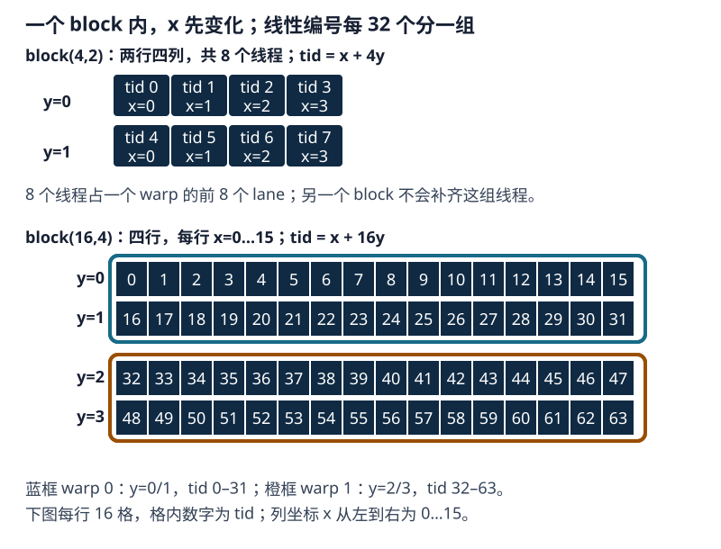

第 2 章：CUDA 执行模型与指令调度#
CUDA 先按 x、再按 y、最后按 z 的顺序为 block 内线程编号，并按连续 32 个编号组成 warp。这个分组关系可用二维 block 的小例子直接计算。
1. 线程编号与 warp 分组#
先看一个二维线程块：dim3 block(4, 2)。这里 x=4、y=2，所以总共有 8 个线程。每个线程有一对坐标 (threadIdx.x, threadIdx.y)：
y |
x = 0 |
x = 1 |
x = 2 |
x = 3 |
|---|---|---|---|---|
| 0 | (0,0) | (1,0) | (2,0) | (3,0) |
| 1 | (0,1) | (1,1) | (2,1) | (3,1) |
按 CUDA 的线性顺序，x 坐标先变化；一行走完后再进入下一行。因此，这 8 个线程的线性编号依次是 (0,0)→0、(1,0)→1、(2,0)→2、(3,0)→3、(0,1)→4，依此类推，到 (3,1)→7。若让这些线程逐个处理向量元素，那么线程 0 处理元素 0、线程 1 处理元素 1，以此类推；二维坐标只是表达线程位置，线性编号方便把它们排成一列。
CUDA 把同一个 block 中连续 32 个线性编号归为一个 warp（线程束）。warp 是硬件调度线程的基本组，一个 lane（线程束内位置）对应组内的一条线程，编号为 0 到 31。block(4,2) 只有 8 个线程，所以它们占据一个 warp 的前 8 个 lane；本 block 的线程数不会因此补到 32，另一个 block 的线程也不会拼进来。
把线程块 x 方向的一排改为 16 个线程：dim3 block(16,4) 有 64 个线程。第一个 warp 取连续的 32 个线性编号，正好包括 threadIdx.y=0 的 16 个线程和 threadIdx.y=1 的 16 个线程；第二个 warp 则包括 threadIdx.y=2 与 threadIdx.y=3 的线程。这里的“排”只指线程块坐标，还不是矩阵的一整行；warp 的边界始终由线性编号每 32 个切分。

现在可以写出一般公式。对二维 block，线性线程编号 tid = threadIdx.x + blockDim.x × threadIdx.y。对三维 block，再加上 blockDim.x × blockDim.y × threadIdx.z，即：
warp_id 表示当前线程属于 block 内第几个 warp；lane_id 表示它在该 warp 中的位置：
这里除以 32 是因为一个 warp 有 32 个 lane；取余 32 得到组内位置。对 block(16,4)，线程 (threadIdx.x=7, threadIdx.y=1) 的 tid=7+16×1=23，所以它属于 warp_id=0，位于 lane_id=23。线程 (7,2) 的 tid=39，属于 warp_id=1，位于 lane_id=7。这些编号只在当前 block 内计算；不同 block 各自从 tid=0 开始分组，warp 不跨 block。
__global__ void record_mapping(int* warp_ids, int* lanes) {
int tid = threadIdx.x + blockDim.x * threadIdx.y;
warp_ids[tid] = tid / 32;
lanes[tid] = tid % 32;
}
// 输出数组各有 64 个 int；只启动一个 16×4 block，覆盖 tid=0..63。
dim3 block(16, 4);
record_mapping<<<1, block>>>(warp_ids, lanes);线程坐标还不能直接说明 warp 处理了矩阵的哪一行。需要先看 kernel 如何用 threadIdx.x/y 计算矩阵下标，以及每个线程处理几个元素。下面的 GEMM 正好提供一个“每线程计算一个输出元素”的例子。
矩阵乘法通常称为 GEMM（General Matrix Multiplication）。下面计算 A[M,N] × B[N,K] = C[M,K]：输出的每个元素是 A 的一行与 B 的一列对应相乘后求和。这个简单实现让一个线程计算一个输出元素，因而可以直接从代码看出线程坐标与矩阵坐标的关系。
__global__ void matrix_multiplication_kernel(const float* A, const float* B, float* C,
int M, int N, int K) {
int k = blockDim.x * blockIdx.x + threadIdx.x; // K 维度索引
int m = blockDim.y * blockIdx.y + threadIdx.y; // M 维度索引
int idx = m * K + k;
if ((k < K) && (m < M)) {
float sum = 0;
for (int n = 0; n < N; n++) {
sum += A[m * N + n] * B[n * K + k];
}
C[idx] = sum;
}
}
extern "C" void solve(const float* A, const float* B, float* C,
int M, int N, int K) {
dim3 threadsPerBlock(16, 16);
dim3 blocksPerGrid((K + 15) / 16, (M + 15) / 16);
matrix_multiplication_kernel<<<blocksPerGrid, threadsPerBlock>>>(A, B, C, M, N, K);
cudaDeviceSynchronize();
}计算为 A[M,N] × B[N,K] => C[M,K]，每个有效线程负责一个 C[m,k]，并沿 n 累加。k 是输出列，来自 blockIdx.x 和 threadIdx.x；m 是输出行，来自 blockIdx.y 和 threadIdx.y；idx = m*K+k 是行优先的 C 线性地址。累加器从零开始，所以结果覆盖写入 C[idx]，不读取旧 C。边界条件 k < K && m < M 使尾块中的无效线程不访问 A/B，也不写 C。
在上述 kernel 中，threadIdx.x 增加 1 就向右移动一个输出列，threadIdx.y 增加 1 就移动到下一输出行；每个线程只负责一个 C[m,k]。因此 blockDim.x 是一个 block 在输出行中最多覆盖的列数，不是整个矩阵的列数。先看没有越界线程的内部 block：
| 线程块 | warp 0 的 32 个线程 | 对输出 C 的覆盖 |
|---|---|---|
block(16,16) |
y=0,x=0…15；y=1,x=0…15 |
相邻两行，各 16 列 |
block(32,8) |
y=0,x=0…31 |
同一行的连续 32 列 |
例如 C 有 64 列时，block(16,16) 需要沿列方向排列 4 个 block 才能覆盖完整的输出行，block(32,8) 则需要 2 个。这里说“warp 跨两行”或“warp 在一行内”，指的是这一条 warp 的输出坐标，不表示矩阵一行只有 16 或 32 个元素，也不表示换个 kernel 后仍是这种映射。实际访存指令和流量还要检查编译产物与测量。
小手算：令 M=3,N=2,K=5，thread (m=1,k=2) 的 idx=1*5+2=7，归约读取 A[1*2+0]=A[2]、B[0*5+2]=B[2]，再读取 A[1*2+1]=A[3]、B[1*5+2]=B[7]，最后写 C[7] = A[2]B[2] + A[3]B[7]。若 thread 落在 m=3 或 k=5，mask 使其不执行这些访问和写回。
线程数也不等于 tile 元素数。NVIDIA transpose 示例使用 32×32 数据 tile，却配置 32×16（512 个线程）的 block；每个线程通过循环搬运两个元素。线程在 tile 中负责哪些元素由索引表达式决定，不能据 tile 大小直接推断线程数。示例见 CUDA Samples transpose。
Triton MatMul 也可用 pid_m、pid_k 表达 program tile；它与 CUDA block 的概念相近，但具体 lane 到 tile 元素的映射由 Triton compiler 和 layout 决定，不能逐字符等同。
2. 线程块驻留与 warp 发射#
2.1 已分配资源：驻留状态#
kernel 启动后，block 被安排到 SM。一个 block 能否驻留，取决于线程数、warp 数、寄存器和共享内存需求，以及设备上限。Resident（驻留）表示 block 所需资源已分配到某个 SM；它不表示 warp 正在执行，也不表示下一条指令已经准备好。活动 warp 数占 SM 可支持最大 warp 数的比例称为 occupancy（占用率），它只描述驻留数量，不直接等于执行管线利用率。
设一个 block 包含 个线程，编译器为每个线程分配 个 32 位寄存器。该 block 的寄存器用量 和 warp 数量 可先估算为：
估算值需与每个 SM 可用寄存器、共享内存、线程数、block 数和 warp 数上限比较。寄存器通常按架构规定的粒度分配，因此公式只是下界估算，不能直接当作驻留数量。寄存器上限也可能使编译器把部分值放入 local memory（设备内存中的线程私有地址空间），从而增加访存开销。
2.2 下一条指令可执行：就绪状态#
驻留中的 warp 可能在等待 global/shared load、依赖链结果或 barrier，也可能没有活动线程执行当前路径。只有当活动线程有可执行的下一条指令，且所需操作数与同步条件均已满足时，这个 warp 才处于就绪状态。调度器从就绪 warp 中选择并发射指令；可发射数量和吞吐率取决于目标架构。
指令之间的数据依赖也会影响就绪状态。下面比较两段求和代码；fmaf(a,b,x) 表示融合乘加 ，乘加结果只进行一次舍入，简称 FMA（Fused Multiply-Add）。第一段只有一个累加值，下一次乘加必须等待它更新；第二段维护四个独立累加值，可以交错处理。
// 依赖链：每条 FMA 都等待上一个 accumulator 的结果
float x = seed;
for (int k = 0; k < K; ++k) {
x = fmaf(a[k], b[k], x);
}// 四条独立链：调度器有机会在等待一条链时发射另一条链
// 假设 K 是 4 的倍数；一般输入需另加尾部处理。
float x0 = seed, x1 = 0.0f, x2 = 0.0f, x3 = 0.0f;
for (int k = 0; k < K; k += 4) {
x0 = fmaf(a[k + 0], b[k + 0], x0);
x1 = fmaf(a[k + 1], b[k + 1], x1);
x2 = fmaf(a[k + 2], b[k + 2], x2);
x3 = fmaf(a[k + 3], b[k + 3], x3);
}
float x = x0 + x1 + x2 + x3;第二段保持求和目标，但改变浮点加法顺序，因此应检查误差容限，而非要求逐位相同。它增加 Instruction-Level Parallelism（指令级并行，ILP）的机会，也会增加同时存活的累加器和地址值。寄存器用量上升可能降低可驻留 warp 数；是否值得，要结合就绪 warp 数量、指令等待原因、寄存器使用量和 kernel 时间判断。
2.3 发出指令：Issue#
指令发射不等于执行完成。warp 发出 global load 后，结果可能尚未返回；调度器可改发其他就绪 warp 的指令。若只有一个 warp 驻留，或所有驻留 warp 都等待同一依赖，部分发射机会可能空闲；更多独立 warp 或同一 warp 内的独立指令有机会填补等待。
例如，时刻 0，warp A 的 load 指令已发出，数据尚未返回；warp B 的操作数已就绪，调度器可以在后续周期发出 B 的算术指令。数据返回后，warp A 再次满足就绪条件并等待发射。驻留描述资源分配，就绪描述当前依赖条件，发射描述某个周期实际提交的指令，三者是不同状态。
分析时先确认资源是否限制了驻留 warp 数，再看就绪 warp 与发射等待的原因，然后判断应增加 block 数、缩短依赖链、调整 tile 或改变数据访问方式。Occupancy（占用率）是活动 warp 数相对于硬件上限的比例，不能直接换算成吞吐率。
即使 occupancy 为 100%，若所有 warp 都等待同一长依赖或同一批内存请求，执行管线仍可能空闲。反之，occupancy 较低的 kernel 也可能因指令级并行度更高或同步更少而取得更好性能。
把 block 从 128 个线程改为 256 个线程，不保证更快。block 数、每块寄存器和共享内存需求、驻留 block 数及尾部有效线程都会变化，应同时检查资源报告、发射等待和 kernel 时间。
3. SIMT 与分支执行#
SIMT（Single Instruction, Multiple Threads，单指令多线程）允许程序按线程标量语义编写 kernel，而硬件以 warp 为单位调度线程。每个线程保有自己的寄存器值和控制流条件。若同一 warp 内的线程走入不同分支，执行需要覆盖所有有活动线程的分支路径；每条路径执行时，不属于该路径的线程暂不参与，这称为 divergence（分支分歧）。分支路径的具体发射与重汇合取决于生成代码和目标架构，不应假设存在可由程序依赖的固定串行顺序。
if ((global_id & 1) == 0) {
output[global_id] = expensive_even(input[global_id]);
} else {
output[global_id] = expensive_odd(input[global_id]);
}如果一个 warp 的 16 个 lane 走 even、另 16 个 lane 走 odd，两条路径都要处理，部分执行周期内会有 lane 不参与有效计算。不同 warp 可以各走一条路径；分歧讨论的是同一 warp 内的控制流差异，并不要求整个 grid 走同一分支。
3.1 谓词执行与短分支#
对非常短的分支，编译器可能采用 predication（谓词执行），给指令附加条件，而不生成显式 branch（分支跳转）。选择表达式也可表达类似意图：
float even_value = input[i] * 2.0f;
float odd_value = input[i] + 3.0f;
output[i] = ((i & 1) == 0) ? even_value : odd_value;谓词执行不会自动省去无用计算：若两边都包含昂贵操作，编译器可能生成两边的运算，只让对应线程写入其中一个结果。短且成本相近的分支可考虑谓词执行；路径长短悬殊时显式分支可能更合适。应检查 PTX/SASS 并使用相同输入测量。
3.2 独立线程调度与 warp 协作#
Compute Capability（计算能力，简称 CC）7.0 及以后支持 Independent Thread Scheduling（独立线程调度，ITS）：硬件维护更细粒度的线程执行状态，允许 divergent/reconvergent 的调度灵活度提高。它不意味着一个 warp 的线程突然变成完全独立的标量处理器，也不授权省略所有同步。依赖 warp 内数据交换、共享状态或隐式 lockstep 的代码，仍应使用明确的 __syncwarp(mask) 或更高层同步原语。
// 前置条件：完整 warp 的 32 个线程均到达这里，lane 0 提供有效 value。
const unsigned mask = 0xffffffffu;
int x = __shfl_sync(mask, value, 0);较早架构的 warp 共享 program counter 和 active mask；支持 Independent Thread Scheduling 的架构可以更独立地推进线程。跨 lane 交换数据时不能依赖隐式锁步，应使用与参与范围一致的同步操作，例如 __syncwarp()。
__syncthreads() 是 block 级 barrier，不能替代所有同步，也不能修复数据竞争、错误的 active mask 或线程提前 return 后造成的 barrier 不一致。同步范围应与实际参与协作的线程组相匹配。
4. Block 波次与尾部利用率#
设一个 SM 最多同时驻留 个该 kernel 的 block，设备有 个 SM，grid 包含 个 block。为了估算尾部工作量，可把 个 block 看作一波，波数为：
最后一波中剩余的 block 数为：
个 block。当 不能被 整除时，最后一波未满，部分 SM 可能提前空闲，这称为尾效应。整除时，最后一波包含完整的 个 block。实际调度没有波次之间的统一屏障：一个 block 完成后，其资源可以用于后续 block；这里的波次只是工作量相近时的估算模型。
block 内也可能存在尾部浪费。例如最后一个 warp 只有少量线程，或者部分线程的元素索引越界，这些位置无法产生有效输出。
例如 S=4、B=2 时，每波容量为 8。G=10 分为 8 个和 2 个 block 两波；第二波占容量的四分之一，至多覆盖 2 个 SM。G=8 恰好是一整波；G=12 分为 8 个和 4 个 block 两波。这个计算说明尾波大小，不能单独预测总耗时；block 工作量和内存等待也会影响结果。
对矩阵 kernel，尾部效率有两个来源：M/N/K 的 tile 余数会使边界 block 中部分线程无有效元素；grid 的 block 总数也可能无法整除设备可同时驻留的 block 容量，使最后一波未填满。性能测试应同时包含整除与非整除形状。
增加 grid 中的 block 数不一定消除尾效应。它可能使最后一波更满，也可能增加边界 block 或总工作量；应结合 block 工作量、驻留容量和实际 launch 形状判断。
5. 计算管线：普通 CUDA Core、FMA 与 Tensor Core#
“计算管线”至少要分成普通标量/向量算术路径和矩阵乘加路径。普通 CUDA kernel 的 fmaf 通常表达一个 FP32 fused multiply-add（融合乘加，FMA）：
float acc = 0.0f;
for (int k = 0; k < K; ++k) {
acc = fmaf(a[k], b[k], acc);
}Tensor Core 是专门的矩阵乘加数据路径，典型操作是 Matrix Multiply-Accumulate（矩阵乘加，MMA）。它要求特定 tile、输入类型、累加类型和布局；“用了矩阵乘”不等于编译器一定选择 Tensor Core。普通 CUDA Core FMA 和 Tensor Core MMA 的吞吐、占用资源和精度规则不同，必须从生成代码或 profiler 证据确认。
5.1 输入、累加器与输出类型#
一种常见的混合精度路径是：输入为 FP16（半精度浮点）或 BF16（一种 16 位浮点格式），乘法使用低精度输入，累加器为 FP32，最后按输出类型转换为 FP16/BF16 或保留 FP32。可以用公式表示为：
然后：
示例：
#include <cuda_fp16.h>
__global__ void half_input_float_accum(const __half* a, const __half* b,
float* c, int n) {
int i = blockIdx.x * blockDim.x + threadIdx.x;
if (i >= n) return;
float af = __half2float(a[i]);
float bf = __half2float(b[i]);
c[i] = fmaf(af, bf, 0.0f);
}这里输出是 FP32，但它并不代表输入存储、带宽或整个算子使用了 FP32 Tensor Core 路径。反过来，输出 FP16 也不必然说明累加器只有 FP16；接口 dtype、内部 accumulator dtype 和硬件 MMA 类型必须分开记录。
该 FP16 tiled GEMM 使用 A[M,K] × B[K,N] => C[M,N] 的输入输出约定，并沿 k 累加；threadIdx.x 映射输出 m，threadIdx.y 映射输出 n。它与 naive GEMM 的计算结构不同，也不能把 FP16 tiled 与 FP32 naive 直接视为同精度优化。shared memory 中的 A_s/B_s 元素为 half，所以 float32 tile 的 bank-conflict 结论不应直接套用；具体访问行为需按 half 地址和目标架构核对。
constexpr int tileLen = 32;
__global__ void kernel(const half* A, const half* B, half* C,
int M, int N, int K, float alpha, float beta) {
int m = blockIdx.x * tileLen + threadIdx.x;
int n = blockIdx.y * tileLen + threadIdx.y;
float sum = 0.0f;
// 每个线程先搬运暂存
__shared__ half As[tileLen][tileLen];
__shared__ half Bs[tileLen][tileLen];
// 遍历 K
for (int t = 0; t < (K + tileLen - 1) / tileLen; ++t) {
// 每个线程搬运自己负责的那块
// A 矩阵按列步进
int aK = t * tileLen + threadIdx.y;
As[threadIdx.x][threadIdx.y] = (m < M && aK < K)
? A[m * K + aK] : __float2half_rn(0.0f);
// B 矩阵按行步进
int bK = t * tileLen + threadIdx.x;
Bs[threadIdx.x][threadIdx.y] = (n < N && bK < K)
? B[bK * N + n] : __float2half_rn(0.0f);
// 同步
__syncthreads();
// 计算
for (int k = 0; k < tileLen; k++) {
sum += __half2float(As[threadIdx.x][k]) *
__half2float(Bs[k][threadIdx.y]);
}
// 同步
__syncthreads();
}
if (m < M && n < N) {
C[m * N + n] = __float2half_rn(
alpha * sum + beta * __half2float(C[m * N + n]));
}
}这段代码中，输入和输出为 half，累加器 sum 为 FP32；alpha 和 beta 决定是否需要读取旧 C。
原文件无条件计算 beta * __half2float(C[m * N + n])，因此即使 beta=0，C 也必须先初始化；IEEE 浮点运算中 0 * NaN 仍为 NaN。若接口允许 beta==0 时不读取 C，kernel 可单独处理该分支并直接写入 alpha * sum。源码中的“HBM 减少 K/TILE 倍”等带宽推断不构成测量结果，DRAM 流量须结合具体设备、输入形状和 profiler 计数判断。
5.2 Triton tl.dot 的 input_precision#
对 FP32 输入，Triton 的 tl.dot 需要明确理解 input precision。一个容易出错的对照是：PyTorch reference 关闭 TF32，而 Triton tl.dot 使用默认输入精度，编译器可能选择允许 Tensor Core/TF32 风格的内部路径；大归约维度下，数值误差就会超过严格 FP32 比较阈值。严格 IEEE FP32 对照应写成：
acc = tl.zeros((BLOCK_M, BLOCK_K), dtype=tl.float32)
acc += tl.dot(tile_a, tile_b, input_precision="ieee")同时在 PyTorch reference 侧固定：
torch.backends.cuda.matmul.allow_tf32 = Falseinput_precision="ieee" 约束的是 dot 输入计算口径，不等于“所有中间张量都自动变成 FP32”，也不等于“输出 dtype 已经确定”。必须另外检查 tile_a、tile_b、acc 和 tl.store 的 dtype。小 shape 通过而长归约出现误差时，先检查 pointer 与 mask 的索引范围，再用同 shape、dtype 和容差分别比较 IEEE 与 TF32；把精度策略显式化，才能把数值路径差异与寻址错误分开。
输出 tensor 声明为 torch.float32 不能消除乘法和归约中已经产生的误差。应显式设置 input_precision="ieee"、关闭 reference 的 TF32，固定 shape 与 seed，再比较最大绝对误差和最大相对误差。
6. 依赖链、分支与执行调度实验#
本实验包含两组对照：依赖链与四条独立 FMA 累加链用于比较指令级并行，偶数/奇数分支与选择表达式用于比较分支处理。每种实现都有独立 CPU reference；应先确认正确性，再看各自的耗时、寄存器和编译指令。独立累加器版本每元素每轮执行 4 次 FMA，依赖链版本执行 1 次，所以二者的毫秒数对应不同算术工作量，不能直接据此判断快慢。
Linux 服务器从仓库根目录执行以下命令；PowerShell 在 roadmap/curriculum/gpu/02-cuda-execution-and-scheduling 目录执行相应命令。先以 n=257 检查尾块，再用 n=1<<20 测量较大输入。
cd roadmap/curriculum/gpu/02-cuda-execution-and-scheduling
nvcc -O3 -std=c++17 -lineinfo --resource-usage \
examples/execution_and_scheduling.cu -o /tmp/cuda-execution
/tmp/cuda-execution 257 20 5
compute-sanitizer --tool memcheck --error-exitcode=1 /tmp/cuda-execution 257 20 5
/tmp/cuda-execution 1048576 200 50程序将每个输出与对应CPU参考比较，非有限值或超限误差返回失败。source_FMA_GFLOP_s 只按源码写出的FMA工作量计数，每次FMA计2 FLOP；检查编译器是否保留这些指令后，才能把归一化吞吐用于分析硬件。
6.1 依赖链与四条独立累加链#
每个输出元素的依赖链版本执行 steps 次 FMA：本轮结果必须等上一轮的累加值。独立累加版本每个元素每轮执行四次 FMA，四个累加器互不依赖，最后求平均。它的总算术工作量是前者的四倍，因此两者的毫秒数不是同工作量对照；源代码 FMA 数用于分别计算归一化吞吐，不能把吞吐推断当成硬件指令计数。
__global__ void dependent_chain_kernel(const float* input, float* output,
int n, int steps) {
const int i = blockIdx.x * blockDim.x + threadIdx.x;
if (i >= n) return;
float x = input[i];
for (int step = 0; step < steps; ++step) {
x = fmaf(x, 1.000001f, 0.00001f);
}
output[i] = x;
}
__global__ void independent_accumulators_kernel(const float* input,
float* output, int n,
int steps) {
const int i = blockIdx.x * blockDim.x + threadIdx.x;
if (i >= n) return;
float x0 = input[i];
float x1 = input[i] + 0.1f;
float x2 = input[i] + 0.2f;
float x3 = input[i] + 0.3f;
for (int step = 0; step < steps; ++step) {
x0 = fmaf(x0, 1.000001f, 0.00001f);
x1 = fmaf(x1, 1.000001f, 0.00001f);
x2 = fmaf(x2, 1.000001f, 0.00001f);
x3 = fmaf(x3, 1.000001f, 0.00001f);
}
output[i] = 0.25f * (x0 + x1 + x2 + x3 - 0.6f);
}6.2 分支与双路径选择#
偶数索引执行 even_path，奇数索引执行 odd_path。分支版本按条件进入对应函数；选择版本先计算两个候选值再选择输出。选择表达式不保证编译器省略未选中的计算，必须检查 PTX/SASS。两个版本完成相同的逐元素运算，可比较 kernel 时间，但仍应核对生成指令与结果误差。
__device__ __forceinline__ float even_path(float x) {
return fmaf(x, 1.25f, 0.5f);
}
__device__ __forceinline__ float odd_path(float x) {
return fmaf(x, 0.75f, -0.25f);
}
__global__ void divergent_branch_kernel(const float* input, float* output,
int n) {
const int i = blockIdx.x * blockDim.x + threadIdx.x;
if (i >= n) return;
if ((i & 1) == 0) {
output[i] = even_path(input[i]);
} else {
output[i] = odd_path(input[i]);
}
}
__global__ void predicated_select_kernel(const float* input, float* output,
int n) {
const int i = blockIdx.x * blockDim.x + threadIdx.x;
if (i >= n) return;
const float even_value = even_path(input[i]);
const float odd_value = odd_path(input[i]);
output[i] = ((i & 1) == 0) ? even_value : odd_value;
}host 代码构造相同输入，为四个 kernel 分别运行 CPU reference；预热后用 CUDA events 对重复 launch 计时，将结果复制回主机并计算最大绝对误差。入口参数依次为 n、迭代次数 steps 和计时重复次数 repeats；默认值分别为 1<<20、200、50，block 大小固定为 256。完整实现展开如下，与前面的 kernel 摘录相互对应。
完整 host、CPU reference 与计时代码
#include <cuda_runtime.h>
#include <algorithm>
#include <cmath>
#include <cstdio>
#include <cstdlib>
#include <limits>
#include <vector>
namespace {
#define CUDA_CHECK(call) \
do { \
cudaError_t error__ = (call); \
if (error__ != cudaSuccess) { \
std::fprintf(stderr, "%s:%d CUDA error: %s\n", \
__FILE__, __LINE__, cudaGetErrorString(error__)); \
std::exit(EXIT_FAILURE); \
} \
} while (false)
__global__ void dependent_chain_kernel(const float* input, float* output,
int n, int steps) {
const int i = blockIdx.x * blockDim.x + threadIdx.x;
if (i >= n) return;
float x = input[i];
for (int step = 0; step < steps; ++step) {
x = fmaf(x, 1.000001f, 0.00001f);
}
output[i] = x;
}
__global__ void independent_accumulators_kernel(const float* input,
float* output, int n,
int steps) {
const int i = blockIdx.x * blockDim.x + threadIdx.x;
if (i >= n) return;
float x0 = input[i];
float x1 = input[i] + 0.1f;
float x2 = input[i] + 0.2f;
float x3 = input[i] + 0.3f;
for (int step = 0; step < steps; ++step) {
x0 = fmaf(x0, 1.000001f, 0.00001f);
x1 = fmaf(x1, 1.000001f, 0.00001f);
x2 = fmaf(x2, 1.000001f, 0.00001f);
x3 = fmaf(x3, 1.000001f, 0.00001f);
}
output[i] = 0.25f * (x0 + x1 + x2 + x3 - 0.6f);
}
__device__ __forceinline__ float even_path(float x) {
return fmaf(x, 1.25f, 0.5f);
}
__device__ __forceinline__ float odd_path(float x) {
return fmaf(x, 0.75f, -0.25f);
}
__global__ void divergent_branch_kernel(const float* input, float* output,
int n) {
const int i = blockIdx.x * blockDim.x + threadIdx.x;
if (i >= n) return;
if ((i & 1) == 0) {
output[i] = even_path(input[i]);
} else {
output[i] = odd_path(input[i]);
}
}
__global__ void predicated_select_kernel(const float* input, float* output,
int n) {
const int i = blockIdx.x * blockDim.x + threadIdx.x;
if (i >= n) return;
const float even_value = even_path(input[i]);
const float odd_value = odd_path(input[i]);
output[i] = ((i & 1) == 0) ? even_value : odd_value;
}
void reference_chain(const std::vector<float>& input,
std::vector<float>& output, int steps) {
for (std::size_t i = 0; i < input.size(); ++i) {
float x = input[i];
for (int step = 0; step < steps; ++step) {
x = std::fma(x, 1.000001f, 0.00001f);
}
output[i] = x;
}
}
void reference_independent(const std::vector<float>& input,
std::vector<float>& output, int steps) {
for (std::size_t i = 0; i < input.size(); ++i) {
float x0 = input[i];
float x1 = input[i] + 0.1f;
float x2 = input[i] + 0.2f;
float x3 = input[i] + 0.3f;
for (int step = 0; step < steps; ++step) {
x0 = std::fma(x0, 1.000001f, 0.00001f);
x1 = std::fma(x1, 1.000001f, 0.00001f);
x2 = std::fma(x2, 1.000001f, 0.00001f);
x3 = std::fma(x3, 1.000001f, 0.00001f);
}
output[i] = 0.25f * (x0 + x1 + x2 + x3 - 0.6f);
}
}
void reference_branch(const std::vector<float>& input,
std::vector<float>& output) {
for (std::size_t i = 0; i < input.size(); ++i) {
output[i] = (i & 1) ? (input[i] * 0.75f - 0.25f)
: (input[i] * 1.25f + 0.5f);
}
}
float max_abs_error(const std::vector<float>& actual,
const std::vector<float>& expected) {
float error = 0.0f;
for (std::size_t i = 0; i < actual.size(); ++i) {
if (!std::isfinite(actual[i]) || !std::isfinite(expected[i])) {
return std::numeric_limits<float>::infinity();
}
error = std::max(error, std::fabs(actual[i] - expected[i]));
}
return error;
}
template <typename Launch>
float measure(Launch launch, float* device_output,
std::vector<float>& host_output, int repeats) {
cudaEvent_t start = nullptr;
cudaEvent_t stop = nullptr;
CUDA_CHECK(cudaEventCreate(&start));
CUDA_CHECK(cudaEventCreate(&stop));
launch();
CUDA_CHECK(cudaGetLastError());
CUDA_CHECK(cudaDeviceSynchronize());
CUDA_CHECK(cudaEventRecord(start));
for (int i = 0; i < repeats; ++i) launch();
CUDA_CHECK(cudaEventRecord(stop));
CUDA_CHECK(cudaEventSynchronize(stop));
float elapsed_ms = 0.0f;
CUDA_CHECK(cudaEventElapsedTime(&elapsed_ms, start, stop));
CUDA_CHECK(cudaMemcpy(host_output.data(), device_output,
host_output.size() * sizeof(float),
cudaMemcpyDeviceToHost));
CUDA_CHECK(cudaEventDestroy(start));
CUDA_CHECK(cudaEventDestroy(stop));
return elapsed_ms / static_cast<float>(repeats);
}
} // namespace
int main(int argc, char** argv) {
const int n = argc > 1 ? std::atoi(argv[1]) : 1 << 20;
const int steps = argc > 2 ? std::atoi(argv[2]) : 200;
const int repeats = argc > 3 ? std::atoi(argv[3]) : 50;
if (n <= 0 || n > std::numeric_limits<int>::max() - 255 ||
steps <= 0 || steps > std::numeric_limits<int>::max() / 4 ||
repeats <= 0) return EXIT_FAILURE;
std::vector<float> input(n), output(n), reference(n);
for (int i = 0; i < n; ++i) input[i] = 0.001f * static_cast<float>(i % 1000);
float* device_input = nullptr;
float* device_output = nullptr;
CUDA_CHECK(cudaMalloc(&device_input, n * sizeof(float)));
CUDA_CHECK(cudaMalloc(&device_output, n * sizeof(float)));
CUDA_CHECK(cudaMemcpy(device_input, input.data(), n * sizeof(float),
cudaMemcpyHostToDevice));
const int threads = 256;
const int blocks = (n + threads - 1) / threads;
bool all_ok = true;
auto run = [&](const char* name, int source_fmas, auto launch, auto reference_fn) {
reference_fn(input, reference);
const float ms = measure(launch, device_output, output, repeats);
const float error = max_abs_error(output, reference);
const bool ok = std::isfinite(error) && error <= 1.0e-4f &&
std::isfinite(ms) && ms > 0.0f;
all_ok = all_ok && ok;
std::printf("%-14s %.4f ms max_abs_error=%.8g %s", name, ms,
error, ok ? "PASS" : "FAIL");
if (source_fmas > 0 && ms > 0.0f) {
// Source-level arithmetic count, not an instruction counter.
const double gflops = 2.0 * n * source_fmas / (ms * 1.0e6);
std::printf(" source_FMA_GFLOP_s=%.3f", gflops);
}
std::printf("\n");
};
run("dependent", steps, [&] {
dependent_chain_kernel<<<blocks, threads>>>(device_input, device_output,
n, steps);
}, [&](const auto& a, auto& b) { reference_chain(a, b, steps); });
run("independent", 4 * steps, [&] {
independent_accumulators_kernel<<<blocks, threads>>>(
device_input, device_output, n, steps);
}, [&](const auto& a, auto& b) { reference_independent(a, b, steps); });
run("divergent", 0, [&] {
divergent_branch_kernel<<<blocks, threads>>>(device_input, device_output,
n);
}, [&](const auto& a, auto& b) { reference_branch(a, b); });
run("predicated", 0, [&] {
predicated_select_kernel<<<blocks, threads>>>(
device_input, device_output, n);
}, [&](const auto& a, auto& b) { reference_branch(a, b); });
CUDA_CHECK(cudaFree(device_input));
CUDA_CHECK(cudaFree(device_output));
return all_ok ? EXIT_SUCCESS : EXIT_FAILURE;
}independent_accumulators_kernel 每元素每轮执行四次 FMA，dependent_chain_kernel 每元素每轮执行一次；应分别记录 kernel 时间和按源码工作量归一化的吞吐。结果误差、寄存器数、活动 warp 和发射等待可帮助解释差异，但性能结论只对实际设备、shape 和编译目标成立。
nvcc -O3 -std=c++17 -lineinfo --resource-usage `
examples/execution_and_scheduling.cu -o execution_and_scheduling.exe
./execution_and_scheduling.exe 1048576 200 50分别记录四个 kernel 的结果。257 用于覆盖非整除尾块；大输入按 200 steps、50 次重复计时。
| Kernel | n | steps | repeats | threads/block | 实际 GPU | correctness / max abs error | 平均 kernel ms | 源码归一化 GFLOP/s |
|---|---|---|---|---|---|---|---|---|
| dependent | 257 | 20 | 5 | 256 | — | — | — | — |
| independent | 257 | 20 | 5 | 256 | — | — | — | — |
| divergent | 257 | 20 | 5 | 256 | — | — | — | 不适用 |
| predicated | 257 | 20 | 5 | 256 | — | — | — | 不适用 |
| dependent | 1,048,576 | 200 | 50 | 256 | — | — | — | — |
| independent | 1,048,576 | 200 | 50 | 256 | — | — | — | — |
| divergent | 1,048,576 | 200 | 50 | 256 | — | — | — | 不适用 |
| predicated | 1,048,576 | 200 | 50 | 256 | — | — | — | 不适用 |
如果输出正确但 dependent kernel 更快，不能立即否定 ILP 分析：可能是编译器融合、数学强度、内存访问或计时粒度主导。若 independent 版本寄存器显著增加而 active warps 下降，ILP 也可能不值得。该例的价值是把“依赖链”和“分歧”变成可复现的代码，而不是预先假定某个 GPU 一定有固定比例提升。
7. 从 CUDA 源码到 PTX 与 SASS#
CUDA 编译路径需要同时看三个身份：
- CUDA C++ 源码表达 thread、block、barrier、dtype 和地址。
- PTX（Parallel Thread Execution，并行线程执行）是面向虚拟 ISA 的中间表示，适合检查 predicate、branch、address space、FMA/MMA 候选和寄存器临时值。
- SASS 是面向具体 CC 目标的机器指令，适合确认最终的 branch/predicate、global/shared/local load/store、barrier 和架构特定 MMA 指令。
命令如下：
nvcc -O3 -std=c++17 -lineinfo --resource-usage `
examples/execution_and_scheduling.cu -o execution_and_scheduling.exe
nvcc -O3 -std=c++17 -ptx -arch=sm_XX `
examples/execution_and_scheduling.cu -o execution_and_scheduling.ptx
nvcc -O3 -std=c++17 -cubin -arch=sm_XX `
examples/execution_and_scheduling.cu -o execution_and_scheduling.cubin
cuobjdump --dump-ptx execution_and_scheduling.exe > execution_and_scheduling.ptx.txt
cuobjdump --dump-sass execution_and_scheduling.exe > execution_and_scheduling.sass.txt
nvdisasm --print-code --print-line-info execution_and_scheduling.cubin-arch=sm_XX 应替换为当前测量设备的 Compute Capability；不要用另一台设备的 SASS 代替目标设备证据。--resource-usage 和 -Xptxas=-v 适合确认寄存器、shared、local；cuobjdump/nvdisasm 适合确认最后的指令形态。调试时先缩到小 shape，launch 后立即检查 launch/configuration error，再在对应 stream/device 同步处观察异步执行错误；CUDA_LAUNCH_BLOCKING=1 可用于临时定位错误归属，compute-sanitizer 可辅助发现非法内存访问。两者都会改变执行/观测条件，不能用于性能计时。
若要检查 Triton MatMul 的低层结果，先运行实际 kernel，再从当前环境的 Triton cache 定位对应 cubin/PTX；缓存布局随 Triton 版本和环境变化，不应假定固定路径。对照时固定 precision、shape 与误差容限，再使用 cuobjdump/nvdisasm 和 profiler 查看目标环境的编译产物。
7.1 编译、链接与运行时错误#
一个 CUDA 程序经过源代码编译、链接、程序装载和设备执行。错误发生在哪个阶段，决定下一步检查什么。
| 现象 | 所处阶段 | 首先检查 |
|---|---|---|
| 未声明标识符、模板实例化失败、host 函数不能从 device 调用 | 编译 | 声明、头文件、函数执行空间、编译目标和 Toolkit 版本 |
undefined reference 或设备链接找不到符号 |
链接 | 定义是否进入构建、声明与定义是否一致、库是否链接、跨文件设备调用是否启用 RDC |
| 程序启动时找不到共享库 | 装载 | 实际依赖的库及其搜索路径；不要通过随意更换全局库来掩盖版本不匹配 |
| kernel 启动配置失败 | 提交 | grid/block、共享内存用量、目标架构与可用设备代码 |
| 在同步或后续 API 才报告非法访问 | 设备执行 | 同一 stream 之前提交的 kernel、地址与边界；同步点可能只是报告错误的位置 |
RDC（Relocatable Device Code，可重定位设备代码）允许设备端函数跨编译单元链接，通常通过 -rdc=true 或分阶段 -dc、-dlink 构建。它与链接主机侧库是两件事；增加 -lcuda 不能修复缺失的设备函数定义。
在 Linux 服务器上，可对本章调度示例执行以下检查。先在本章目录编译，再检查生成文件：
nvcc -std=c++17 -O2 -g -lineinfo examples/execution_and_scheduling.cu -o execution_check
ldd ./execution_check
readelf -d ./execution_check
./execution_check 257 20 5
compute-sanitizer --tool memcheck --error-exitcode=1 ./execution_check 257 20 5ldd 显示主机动态库的解析结果，readelf -d 显示 ELF 文件的动态链接信息；它们不检查 GPU 索引是否正确。主机侧崩溃可用 gdb --args ./execution_check 257 20 5，依次执行 run、bt 获取调用栈。GPU 访问错误则先用小输入和 Compute Sanitizer 定位。普通 GDB 的主机调用栈不能代替 CUDA kernel 的访存检查。
缩小问题时，只保留一个失败形状、一个实现和固定输入；记录完整命令、首个错误及对应源码位置。修复后重新进行数值比较和边界测试，再恢复异步执行与性能计时。
进一步阅读：CUDA Tile、Driver API、CUDA Python 与 C++ 高级接口
8. CUDA Tile 的数据组织与执行接口#
写 CUDA SIMT kernel 时，通常先确定一个 thread 负责哪些元素，再安排 warp 和 block 的协作。CUDA Tile 换了表达粒度：一个 tile block 的代码描述一组元素的计算，编译器安排这些元素如何分布到硬件线程、使用哪些加载和计算指令。这里的 SIMT 是 Single Instruction, Multiple Threads，单指令多线程；两种写法改变的是编程接口，不是 GPU 突然换了一套没有线程的执行硬件。
例如向量加法，SIMT 写法计算 blockIdx.x * blockDim.x + threadIdx.x；tile 写法取第 bid 个长度为 128 的数据块，相加后存回。后者少写了线程索引，但仍要决定 tile 大小、访问模式、数据类型、边界和 grid。把这些决定交给一个更粗的接口，并不意味着性能优化已经完成。
CUDA Tile 有 Python 和 C++ 两个入口：Python 使用 cuda.tile，C++ 使用 cuda_tile.h 和 cuda::tiles。本节 C++ 语法以 CUDA Toolkit 13.3 为基准；旧 Toolkit 不因为支持普通 CUDA C++ 就同时支持 __tile_global__。Python 包、驱动、编译器后端与目标 GPU 也必须互相兼容。Triton 是另一套编译系统，不能把两者相似的 API 名称当成二进制或语言兼容承诺。
8.1 Array、tile 和硬件缓冲区是三个层次#
Array 表示设备内存中的数组，包含 shape、dtype、stride 等信息。Tile 是 kernel 内具有编译期 shape 和 dtype 的值。假设从 A[10,16] 取出一个 2×4 tile：源数组还在 global memory；加载产生的是八个逻辑数值。编译器可能让它们位于寄存器、通过 shared memory 中转，或采用其他合法的数据通路。
Tile 不是 shared memory 的别名，也不是“一个 thread 的数组”。 tile.shape=(2,4) 只说明八个元素怎样组织，不能据此判断八个线程、八个寄存器或某个固定的物理布局。寄存器占用、shared 用量和实际指令，要到编译产物与 profiler 中确认。
Tile 具有值语义。写 y = x + 1 是产生新值，不会自动把源 Array 加一；只有 store 才把结果写回 Array。编译器可以消除不必要的复制，但程序不能依赖两个 tile 变量作为可互相修改的存储别名。Tile 的各维大小要求为 2 的幂，Array 的大小则不需要，例如长度 1025 的数组仍能用长度 128 的 tile 处理。
把已经熟悉的 Triton 语句放在这个层次中，就容易分清地址和值：
offsets = tl.program_id(0) * BLOCK + tl.arange(0, BLOCK)
ptrs = a + offsets # 指针组成的 tile，还没有读取 a
x = tl.load(ptrs, offsets < N, other=0.0) # 数据组成的 tile
y = x + 1.0 # 新的逻辑值
tl.store(c + offsets, y, offsets < N) # 写入 c 的有效元素ptrs 中每个位置对应一个地址，这与你之前对 MatMul 地址块的理解相同。至于由哪些 lane 发出多少条内存指令，不是 Python 中“一个位置”与 CUDA 中“一个 thread”的一一对应关系。
8.2 Tile 坐标和元素坐标不能混用#
设 Array 的 shape 为 (M,N)，tile 的 shape 为 (TM,TN)。tile 坐标 (bm,bn) 中的局部元素 (i,j) 对应：
对于 row-major 连续数组，它的元素偏移是：
取 A[10,16]、tile (2,4)、tile 坐标 (1,2)，起点是元素 (2,8)，不是元素 (1,2)。这个 tile 的八个元素如下：
| tile 内局部行 | 第 0 列 | 第 1 列 | 第 2 列 | 第 3 列 |
|---|---|---|---|---|
| 0 | A[2,8]，偏移 40 | A[2,9]，41 | A[2,10]，42 | A[2,11]，43 |
| 1 | A[3,8]，偏移 56 | A[3,9]，57 | A[3,10]，58 | A[3,11]，59 |
规则 tile-space load 接收的是 (1,2) 这种块坐标；gather 接收的是具体元素的索引。Triton 常见指针写法则直接构造这八个地址。三种表达可以描述同一片数据，但传入的数字含义不同。
规则访问为编译器提供了数组与分块结构，受支持的设备上可能采用 Tensor Memory Accelerator（TMA，张量内存加速器）搬运。Gather 更适合查表、置换和数据相关索引。不要为了表面统一，把天然规则的二维 tile 全部改写成任意指针访问；也不要因为用了规则 view，就认定最后一定发出了 TMA 指令。
8.3 同一个向量加法，三种表达#
普通 CUDA C++ 显式写一个线程的元素索引：
__global__ void add_simt(const float* a, const float* b, float* c, int n) {
int i = blockIdx.x * blockDim.x + threadIdx.x;
if (i < n) c[i] = a[i] + b[i];
}
// n > 0；a、b、c 指向至少 n 个 float，c 不与输入重叠。
add_simt<<<(n + 127) / 128, 128, 0, stream>>>(a, b, c, n);CUDA Tile C++ 则为指针附上数组 shape，再定义分块：
#include "cuda_tile.h"
__tile_global__ void add_tile(const float* __restrict__ a,
const float* __restrict__ b,
float* __restrict__ c, int n) {
namespace ct = cuda::tiles;
using namespace ct::literals;
a = ct::assume_aligned(a, 16_ic);
b = ct::assume_aligned(b, 16_ic);
c = ct::assume_aligned(c, 16_ic);
auto av = ct::partition_view{ct::tensor_span{a, ct::extents{n}},
ct::shape{128_ic}};
auto bv = ct::partition_view{ct::tensor_span{b, ct::extents{n}},
ct::shape{128_ic}};
auto cv = ct::partition_view{ct::tensor_span{c, ct::extents{n}},
ct::shape{128_ic}};
int block = ct::bid().x;
auto x = av.load_masked(block);
auto y = bv.load_masked(block);
cv.store_masked(x + y, block);
}
// CUDA Tile C++ 的第二个 launch 参数必须为 1，不是指定一个物理线程。
// n > 0；a、b、c 分别由 cudaMalloc 分配，并满足此处的对齐与不重叠要求。
add_tile<<<(n + 127) / 128, 1, 0, stream>>>(a, b, c, n);这里 128_ic 是编译期常量，n 是运行时数组长度。load_masked 处理最后一个不完整 tile；普通 load 要求整个 tile 在界内。assume_aligned 是程序向编译器作出的保证，不会把未对齐指针修正为对齐指针。假如把 a+1 传入，FP32 地址通常只移动四字节，就不能继续作出同样的 16 字节保证。
Python cuTile 的完整向量加法如下。设备数组由 PyTorch 管理，计算由 cuTile kernel 完成；检查值选用可精确表示的小整数，避免把舍入误差和地址错误混在一起。输出分配额外七个元素作为哨兵区，传给 kernel 的数组 view 则严格限制为前 n 个元素。
#!/usr/bin/env python3
"""Minimal cuTile vector add with explicit tail-storage validation."""
import argparse
import sys
def parse_args() -> argparse.Namespace:
parser = argparse.ArgumentParser(
description="Run a cuTile FP32 vector add for several tail sizes."
)
return parser.parse_args()
def run() -> int:
# Keep optional GPU-stack imports after argparse so --help works on a CPU-only
# machine and does not require torch or cuda.tile to be importable.
try:
import torch
import cuda.tile as ct
except ImportError as error:
# A missing top-level module is an expected local skip. Broken imports
# inside an installed package remain errors and must not be masked.
missing = getattr(error, "name", "")
if isinstance(error, ModuleNotFoundError) and missing in (
"torch",
"cuda",
"cuda.tile",
):
print(f"SKIP: cuTile/torch stack unavailable: {error}")
return 77
raise
if not torch.cuda.is_available():
print("SKIP: no usable CUDA device")
return 77
from importlib.metadata import PackageNotFoundError, version
try:
tile_version = version("cuda-tile")
except PackageNotFoundError:
tile_version = "unknown"
print(
f"torch={torch.__version__} cuda={torch.version.cuda} "
f"cuda.tile={tile_version} gpu={torch.cuda.get_device_name(0)}"
)
@ct.kernel
def vec_add(a, b, c, TILE: ct.Constant[int]):
bid = ct.bid(0)
x = ct.load(
a,
index=(bid,),
shape=(TILE,),
padding_mode=ct.PaddingMode.ZERO,
)
y = ct.load(
b,
index=(bid,),
shape=(TILE,),
padding_mode=ct.PaddingMode.ZERO,
)
ct.store(c, index=(bid,), tile=x + y)
device = torch.device("cuda")
sentinel = -12345.25
def run_case(n: int) -> None:
# Integer-like FP32 values keep the reference comparison exact.
indices = torch.arange(n, dtype=torch.float32, device=device)
a = indices - 7.0
b = torch.remainder(indices, 13.0) + 2.0
output_storage = torch.full(
(n + 7,), sentinel, dtype=torch.float32, device=device
)
c = output_storage[:n]
if n == 0:
# Never submit a zero-sized grid; the empty case is host-side only.
print("case n=0: bypassed launch (no zero grid)")
return
if not (a.is_contiguous() and b.is_contiguous() and c.is_contiguous()):
raise AssertionError(f"case n={n} did not produce contiguous arrays")
pointers = (a.data_ptr(), b.data_ptr(), output_storage.data_ptr())
if len(set(pointers)) != len(pointers):
raise AssertionError(f"case n={n} unexpectedly aliases input/output")
grid = ((n + 127) // 128,)
ct.launch(
torch.cuda.current_stream(),
grid,
vec_add,
(a, b, c, 128),
)
torch.cuda.current_stream().synchronize()
expected = a + b
torch.testing.assert_close(c, expected, rtol=0, atol=0)
if not torch.all(output_storage[n:] == sentinel).item():
raise AssertionError(f"case n={n} overwrote the output tail")
print(f"case n={n}: PASS")
for n in (0, 1, 127, 128, 129, 1025):
run_case(n)
return 0
def main() -> int:
parse_args()
return run()
if __name__ == "__main__":
sys.exit(main())ct.load 从传入的数组获得长度，index 仍然是 tile 坐标。Python 的 tile-space store 丢弃部分尾块的越界写入；load 则在这里显式选择零填充。ct.Constant[int] 固定的是 tile 大小，改变这个值可能触发新的编译特化，而不是给同一份机器码换一个普通标量参数。
8.4 尾块：哪些元素需要有定义#
长度 129、tile 长度 128 时，grid 有两个 tile block。第二个 block 只有第一个元素有效，其余 127 个加载位置填零，输出只存第一个位置。长度为零时在 host 直接返回，不发起零大小 grid，也不读取一个完全处于 Array 外的 tile。
这里的尾块处理不能推广为“任意越界 tile 都安全”：tile-space 接口仍要求正确计算 grid，完全落在数组范围之外的 tile 不属于部分边界块。Gather/scatter 的边界规则另行定义。
填充值还取决于接下来的计算。加法或 GEMM 归约的尾项用零；求最大值通常需要负无穷，否则全为负数的有效输入会被填充的零改变。Softmax 在减最大值和指数运算之前要排除无效位置，让无效位置的指数贡献为零。不能因为一个向量加法例子用了 ZERO，就把所有算子统一零填充。
同样，元素级选择 ct.where(mask, x, y) 不等于阻止此前的非法 load。如果地址可能越界，应先用正确的加载接口或 mask 保护访问，然后选择计算结果。选择表达式处理的是值，不会撤回已经表达的内存读取。
8.5 GEMM 的循环与 accumulator 并没有消失#
沿用本课程的命名，A[M,N] @ B[N,K] = C[M,K]，N 为归约维。一个 tile block 负责输出的 BM×BK 块，每次沿 N 读取 BM×BN 和 BN×BK。Python cuTile 可以直接表达这个算法：
@ct.kernel
def matmul_tiles(A, B, C, BM: ct.Constant[int],
BN: ct.Constant[int], BK: ct.Constant[int]):
bm, bk = ct.bid(0), ct.bid(1)
steps = ct.num_tiles(A, axis=1, shape=(BM, BN))
acc = ct.full((BM, BK), 0, dtype=ct.float32)
for bn in range(steps):
a = ct.load(A, index=(bm, bn), shape=(BM, BN),
padding_mode=ct.PaddingMode.ZERO)
b = ct.load(B, index=(bn, bk), shape=(BN, BK),
padding_mode=ct.PaddingMode.ZERO)
acc = ct.mma(a, b, acc)
ct.store(C, index=(bm, bk), tile=acc.astype(C.dtype))这段 kernel 以连续二维 FP16 输入、FP32 累加为例，launch grid 是 (ceil(M/BM), ceil(K/BK))；tile 大小需要符合目标实现的矩阵运算约束。ct.mma 返回更新后的 accumulator，不能只调用而丢弃返回值。输出转换放在归约结束后，避免每一小块都提前舍入到低精度。
它与 acc += tl.dot(tile_a, tile_b) 具有相同的分块数学结构，但生成的指令并不相同。数据复用次数、矩阵指令布局、流水深度和资源分配由代码与编译结果共同决定；改用 cuTile 后代码变短，不足以证明性能更好。
以输入元素占 s 字节计算，一轮理想 tile 加载需要：
增大输出块可提高这部分计算/读取比，同时把 accumulator 从 BM×BK 个 FP32 值继续扩大。无论采用哪种语言，这个复用与资源压力的矛盾都存在；最终还要计算输出写回、多级缓存和并发 CTA 的影响。
8.6 编译器提示和性能证据#
CUDA Tile 的 hints（优化提示）影响编译选择。例如 occupancy hint 表示希望每个 SM 驻留的 CTA 数，不是传统 occupancy 百分比；latency hint 是访存强度的等级提示，不是“这次访问需要几纳秒”；允许 TMA 只表示允许选择该通路，不保证选择成功。
这些提示也不是 Triton num_warps、num_stages 的替代拼写。调整一个提示后，应先检查编译产物有没有变化，再比较 registers、shared、active warps、内存指令和 kernel time。若编译器生成相同代码，多测一个不同提示的配置并没有构成新的优化方案。
普通 SIMT kernel 与 tile kernel 可以在同一 host 程序中使用相同 global buffer，按 stream 顺序先后调用。C++ tile 函数与普通 __device__ 函数则不能直接互相调用。不要把“共享设备内存和 launch 体系”误解为“kernel 内任意混用两种语言”。
9. Driver API、Runtime API、context 与 module#
CUDA Runtime API 与 CUDA Driver API 最终都驱动同一套 GPU 执行机制，但把控制权放在不同层。Runtime API（cuda*）通常由编译器生成的 host stub 管理 kernel 参数、当前设备的 primary context、模块装载与常见资源；它适合大多数单应用 CUDA C++ 程序。Driver API（cu*）显式操作 CUdevice、CUcontext、CUmodule、CUfunction、CUstream 和 CUdeviceptr，可以从 PTX/CUBIN 装载模块并做 JIT，适合运行时编译、插件、框架后端和需要精细控制 context 的系统代码。
CUcontext 是一组设备地址空间、模块和相关状态的执行上下文，不等于 CPU 线程。Driver API 的许多调用作用于调用线程当前的 context；应用需要明确 retain/create、set-current，并在资源销毁后 release/destroy。Runtime 默认使用设备的 primary context。需要 Runtime/Driver 混用时，常见做法是 Driver 侧 cuDevicePrimaryCtxRetain 后 cuCtxSetCurrent，让两边指向同一个 primary context；不要在 Runtime 已使用 primary context 时再随意创建另一个 context 并混着传指针。跨 context 的 CUdeviceptr、stream、module/function 句柄不能仅因数值看起来相同就互换。
模块（module）是设备代码和相关符号的装载单元；函数句柄（CUfunction）由模块内符号名查得。下面的完整最小程序把 PTX 作为字符串嵌入可执行文件，显式建立 primary context、装载 PTX、查找 kernel、分配显存、传参启动并复制结果。PTX 中每个参数的宽度和 host 侧 kernel_params 指向的对象必须逐项匹配：三个地址是 64 位 CUdeviceptr，n 是 32 位 int。
.visible .entry vector_add(
.param .u64 param_a,
.param .u64 param_b,
.param .u64 param_c,
.param .u32 param_n
)
{
.reg .pred %p<2>;
.reg .b32 %r<4>;
.reg .b64 %rd<7>;
.reg .f32 %f<4>;
ld.param.u64 %rd1, [param_a];
ld.param.u64 %rd2, [param_b];
ld.param.u64 %rd3, [param_c];
ld.param.u32 %r2, [param_n];
mov.u32 %r0, %ctaid.x;
mov.u32 %r1, %ntid.x;
mov.u32 %r3, %tid.x;
mad.lo.u32 %r0, %r1, %r0, %r3;
setp.ge.u32 %p1, %r0, %r2;
@%p1 bra DONE;
cvt.u64.u32 %rd4, %r0;
shl.b64 %rd4, %rd4, 2;
add.u64 %rd5, %rd1, %rd4;
add.u64 %rd6, %rd2, %rd4;
ld.global.f32 %f1, [%rd5];
ld.global.f32 %f2, [%rd6];
add.f32 %f3, %f1, %f2;
add.u64 %rd5, %rd3, %rd4;
st.global.f32 [%rd5], %f3;
DONE:
ret;
}context 复用、PTX module/function 的装载与查找、Driver kernel launch 的参数数组如下。每个 kernel_params[i] 是“指向 host 参数存储”的指针，不是把设备地址直接当成 host 指针传入。这个例子用同步 HtoD/DtoH 接受普通 std::vector 页内存；若改成 cuMemcpy*Async，host buffer 必须满足对应的页锁定/注册条件，并且其生命周期要覆盖异步传输。
CU_CHECK(cuDevicePrimaryCtxRetain(&context, device));
CU_CHECK(cuCtxSetCurrent(context));
CU_CHECK(cuStreamCreate(&stream, CU_STREAM_DEFAULT));
CU_CHECK(cuModuleLoadDataEx(&module, kVectorAddPtx, 0, nullptr, nullptr));
CU_CHECK(cuModuleGetFunction(&function, module, "vector_add"));
CU_CHECK(cuMemAlloc(&d_a, bytes));
CU_CHECK(cuMemAlloc(&d_b, bytes));
CU_CHECK(cuMemAlloc(&d_c, bytes));
// Synchronous copies accept these std::vector pageable host buffers.
CU_CHECK(cuMemcpyHtoD(d_a, host_a.data(), bytes));
CU_CHECK(cuMemcpyHtoD(d_b, host_b.data(), bytes));
CU_CHECK(cuLaunchKernel(function,
blocks, 1, 1,
threads, 1, 1,
0, stream, kernel_params, nullptr));
CU_CHECK(cuStreamSynchronize(stream));
CU_CHECK(cuMemcpyDtoH(host_c.data(), d_c, bytes));cuModuleLoadDataEx 的 Driver API 原型包含 numOptions、options 两个 JIT 参数；即使没有 JIT 选项，也要传 0, nullptr。kernel launch 是异步入队；这里先等 stream 完成再读回，避免把 host 校验和设备执行的完成边界混在一起。错误清理按“停止/等待使用者 → 销毁 stream → 释放设备内存 → unload module → release primary context”的顺序进行。主 context 由 retain/release 计数管理，不能对它调用 cuCtxDestroy。
nvcc -std=c++17 -O2 roadmap/curriculum/gpu/02-cuda-execution-and-scheduling/examples/driver_api_vector_add.cu -lcuda -o driver_api_vector_add
./driver_api_vector_add --help
./driver_api_vector_add 257程序以无设备退出码 77 表示跳过，其他 Driver 错误仍是失败。PTX 使用 .target sm_70 和 .version 7.0，driver 会在 cuModuleLoadDataEx 时为实际设备 JIT；本例不依赖 NVCC 生成设备代码，但仍需 CUDA Toolkit 头文件、NVCC host 编译器与兼容的 NVIDIA Driver。
9.1 Runtime 初始化、lazy loading 与错误定位#
Runtime 初始化和 device module 装载是两个不同边界。第一次 Runtime 调用可能建立线程关联的 Runtime 状态并初始化/选择 primary context；这不代表程序中每个 kernel 的设备代码都已经装入。CUDA 11.7 引入 lazy loading；CUDA 12.2 起 Linux 默认启用，12.3 起 Windows 默认启用，当前文档将默认行为描述为 lazy。CUDA_MODULE_LOADING=LAZY|EAGER 要在进程启动前设置：lazy 把具体 kernel 装载推迟到首次需要时，eager 把装载开销前移。运行时可用 Driver API cuModuleGetLoadingMode 查询模式；cudaFuncGetAttributes 或 cuModuleGetFunction 可显式触发指定函数装载。仅调用 cudaFree(nullptr) 可以帮助把 Runtime/context 初始化从后续阶段分离，不能据此声称 kernel 已预载。
下面示例把第一次调用 add_one 作为可能发生模块装载的位置；加 --preload 则用 cudaFuncGetAttributes 提前装入该函数。launch 后立即检查 cudaGetLastError()，再在 stream/device 同步点观察异步执行错误；调试时可以把 CUDA_LAUNCH_BLOCKING=1 作为定位辅助手段，但不能用它测性能，也不能用逐 kernel 同步的调试行为代表正式异步路径。
// This explicit no-op allocation forces Runtime/context initialization;
// it does not, by itself, prove every kernel module has been loaded.
CUDA_CHECK(cudaFree(nullptr));
CUDA_CHECK(cudaMalloc(&device_input, n * sizeof(int)));
CUDA_CHECK(cudaMalloc(&device_output, n * sizeof(int)));
CUDA_CHECK(cudaMemcpy(device_input, input.data(), n * sizeof(int),
cudaMemcpyHostToDevice));
if (preload) {
cudaFuncAttributes attributes{};
CUDA_CHECK(cudaFuncGetAttributes(&attributes, add_one));
std::printf("kernel preloaded: registers=%d\n", attributes.numRegs);
} else {
std::printf("first kernel launch is the first use of add_one\n");
}
add_one<<<blocks, threads>>>(device_input, device_output, n);
// Immediate check reports launch/configuration errors. Execution faults
// are observed at the stream synchronization boundary below.
CUDA_CHECK(cudaGetLastError());
CUDA_CHECK(cudaDeviceSynchronize());nvcc -std=c++17 -O2 roadmap/curriculum/gpu/02-cuda-execution-and-scheduling/examples/runtime_lazy_loading.cu -o runtime_lazy_loading
CUDA_MODULE_LOADING=LAZY ./runtime_lazy_loading
CUDA_MODULE_LOADING=EAGER ./runtime_lazy_loading --preload
CUDA_LAUNCH_BLOCKING=1 ./runtime_lazy_loading比较首次调用延迟时，分别记录 Runtime/context 初始化、函数预载、首次 launch 和稳定重复调用；否则 lazy module load、JIT、allocator 初始化和 kernel 本身会混成一个数字。若错误只在同步时出现，应沿该 stream 上此前入队的操作逆向定位，不能简单把同步 API 当作出错 API 的来源。
10. CUDA Python：控制 API 与 kernel DSL 是两层#
Python 只是 CUDA 的宿主语言入口，不自动意味着“Python 函数会在 GPU 执行”。先区分控制面与 kernel 面：cuda.bindings 把 Driver/Runtime C API 暴露给 Python，负责初始化、context、stream、内存、模块与版本查询；cuda.core 提供更 Pythonic 的控制接口；cuda.lang（SIMT）和 cuda.tile（Tile）才是写设备函数/kernel 的 DSL。Numba-CUDA 的 @cuda.jit 是另一种 SIMT kernel DSL。CuPy、PyTorch 等是数组/框架层，替你管理一部分设备内存和当前 stream；它们不是 cuda.bindings，也不把普通 Python 函数变成 kernel。
这一区分决定所有权和地址解释。CPU numpy.ndarray 的 data 是 host 虚拟地址，不能当作 CUdeviceptr 解引用；CUDA 设备指针只在所属 device/context 的设备地址空间有效。对连续 FP32 向量，元素 i 的字节偏移为 4i，而 ptr + i 的 C/C++ 指针算术是 4i 字节；Driver API 的 CUdeviceptr 则是字节地址，传给 kernel 前要遵从 kernel 参数 ABI。Python binding 返回的 CUdeviceptr 不是可由 Python 直接索引的 NumPy 数组。
下面的程序使用 cuda.bindings.driver 建立并选中 primary context、创建非默认 stream、分配设备地址、排入异步清零，再把结果复制到 NumPy 缓冲区检查哨兵值。清零由 Driver API 完成，不是 kernel DSL。primary context retain 返回句柄，但不会自动将其设为当前 context；可复用函数还应保存调用线程原来的 current context，并在结束时恢复。分配、排队、同步、读回、释放和 context release 必须按设备工作生命周期排序。
完整 Python Driver bindings 程序
#!/usr/bin/env python3
"""Show explicit CUDA Driver bindings, context, stream, and device-pointer lifetime."""
import sys
import numpy as np
def main() -> int:
try:
from cuda.bindings import driver as cu
except ImportError as error:
print(f"SKIP: cuda.bindings is unavailable: {error}")
return 77
success = cu.CUresult.CUDA_SUCCESS
def checked(call, where):
result = call()
status, *values = result
if status != success:
_, name = cu.cuGetErrorName(status)
_, message = cu.cuGetErrorString(status)
raise RuntimeError(f"{where}: {name}: {message}")
return values[0] if values else None
def cleanup(call, where):
try:
checked(call, where)
except Exception as error:
print(f"cleanup warning: {error}", file=sys.stderr)
checked(lambda: cu.cuInit(0), "cuInit")
previous_context = checked(cu.cuCtxGetCurrent, "cuCtxGetCurrent")
driver_version = checked(cu.cuDriverGetVersion, "cuDriverGetVersion")
device_count = checked(cu.cuDeviceGetCount, "cuDeviceGetCount")
print(f"driver API version={driver_version}; visible devices={device_count}")
if device_count == 0:
print("SKIP: no CUDA device is visible")
return 77
device = checked(lambda: cu.cuDeviceGet(0), "cuDeviceGet")
context = None
stream = None
device_ptr = None
context_is_current = False
host_word = np.full(1, 0xA5A5A5A5, dtype=np.uint32)
try:
context = checked(lambda: cu.cuDevicePrimaryCtxRetain(device),
"cuDevicePrimaryCtxRetain")
checked(lambda: cu.cuCtxSetCurrent(context), "cuCtxSetCurrent")
context_is_current = True
stream = checked(lambda: cu.cuStreamCreate(0), "cuStreamCreate")
device_ptr = checked(lambda: cu.cuMemAlloc(4), "cuMemAlloc")
print(f"device pointer handle={device_ptr}; allocated bytes=4")
# The 32-bit pattern is written asynchronously in this stream.
checked(lambda: cu.cuMemsetD32Async(device_ptr, 0, 1, stream),
"cuMemsetD32Async")
checked(lambda: cu.cuStreamSynchronize(stream), "cuStreamSynchronize")
checked(lambda: cu.cuMemcpyDtoH(host_word, device_ptr, host_word.nbytes),
"cuMemcpyDtoH")
np.testing.assert_array_equal(host_word, np.array([0], dtype=np.uint32))
print(f"D2H verification passed: {host_word[0]}")
finally:
# Never release storage while work queued in its stream can still use it.
if stream is not None:
cleanup(lambda: cu.cuStreamSynchronize(stream), "final stream sync")
if device_ptr is not None:
cleanup(lambda: cu.cuMemFree(device_ptr), "cuMemFree")
if stream is not None:
cleanup(lambda: cu.cuStreamDestroy(stream), "cuStreamDestroy")
if context_is_current:
cleanup(lambda: cu.cuCtxSetCurrent(previous_context),
"restore previous current context")
if context is not None:
cleanup(lambda: cu.cuDevicePrimaryCtxRelease(device),
"cuDevicePrimaryCtxRelease")
return 0
if __name__ == "__main__":
sys.exit(main())checked 解包 Python binding 的 (CUresult, outputs...) 返回值；设备句柄、context、stream 和 device pointer 都是 opaque handle，不是 host 数组。cuDevicePrimaryCtxRetain 的返回值要和 cuDevicePrimaryCtxRelease(device) 配对，cuCtxSetCurrent 负责把 context 绑定到调用线程；primary context 与 Runtime API 共享，避免在同一进程里无意创建第二个互不兼容的地址空间。代码先以 cuCtxGetCurrent() 保存旧 context，最终恢复而不是把调用者的 current context 清空。cuMemsetD32Async 按 stream 排队，host 函数返回不表示设备操作已完成；同步后用阻塞式 cuMemcpyDtoH 读回普通 NumPy host 数组。哨兵从 0xA5A5A5A5 变为 0 且断言通过，才证明写入和 D2H 地址/字节数都可观察；若换成 cuMemcpyDtoHAsync，还必须处理目标 host buffer 的页锁定要求及其生命周期。数组框架拥有的内存也不能在异步 kernel 使用前被 Python 引用计数释放。
设备代码应写在 DSL/kernel 里。例如既有 cuTile 向量加法的 @ct.kernel 函数体只使用 tile 运算；host 侧则把框架分配的数组和 stream 交给 ct.launch。Numba-CUDA 的 @cuda.jit 则表达 SIMT thread：每个 thread 算 i=cuda.grid(1)，自己验证索引有效后才读写数组。它不等同于 cuda.bindings.driver。下面的完整小程序用不整除 block 的 257 个 FP32 元素，最后一个 block 有效 lane 与无效 lane 同时存在；kernel 内的 if i < n 是内存安全条件，不是由 CuPy/Numba 自动补上的检查。
完整 Numba-CUDA SIMT 向量加法
#!/usr/bin/env python3
"""A bounded SIMT vector add with explicit dtype, stream, and tail guard."""
import sys
try:
import numpy as np
from numba import cuda
except ImportError as error:
print(f"SKIP: NumPy or Numba-CUDA is unavailable: {error}")
raise SystemExit(77)
@cuda.jit
def vector_add(a, b, out, n):
i = cuda.grid(1)
if i < n:
out[i] = a[i] + b[i]
def run_case(n: int) -> None:
sentinel = np.float32(-12345.25)
host_a = np.arange(n, dtype=np.float32)
host_b = np.full(n, 2.0, dtype=np.float32)
host_out = np.full(n + 1, sentinel, dtype=np.float32)
if n == 0:
np.testing.assert_array_equal(host_out, np.array([sentinel], dtype=np.float32))
print("n=0: host-only empty case; no zero-sized grid was launched")
return
threads = 128
blocks = (n + threads - 1) // threads
with cuda.gpus[0]:
stream = cuda.stream()
device_a = cuda.to_device(host_a, stream=stream)
device_b = cuda.to_device(host_b, stream=stream)
device_out = cuda.to_device(host_out, stream=stream)
vector_add[blocks, threads, stream](device_a, device_b, device_out, n)
result = device_out.copy_to_host(stream=stream)
# Keep arrays, stream, and host buffers alive until all queued work ends.
stream.synchronize()
expected = np.full(n + 1, sentinel, dtype=np.float32)
expected[:n] = host_a + host_b
np.testing.assert_array_equal(result, expected)
print(f"n={n}: PASS; tail sentinel={result[n]}")
def main() -> int:
if not cuda.is_available():
print("SKIP: no usable CUDA device")
return 77
for n in (0, 1, 127, 128, 129, 257):
run_case(n)
return 0
if __name__ == "__main__":
sys.exit(main())blocks=ceil(n/threads) 可由整数式 (n+threads-1)//threads 得到。取 n=257、threads=128 时 blocks=3，全 grid 有 384 个 thread，只有索引 0..256 有效；i=257..383 必须在解引用前退出。输出多留一个 FP32 哨兵，因此可检查 out[n] 是否被尾块写坏。所有 host/device 数组明确使用 np.float32，避免默认 float dtype 改变 kernel 参数类型或传输字节数。
手册示例需要按库的真实语义修正：Numba-CUDA 对设备数组越界访问默认不会像 NumPy 一样自动抛 IndexError，普通 kernel 必须显式判断 i < n；CuPy zeros 的默认 dtype 是 Python float，不是 FP32，算子实验应写 cp.zeros(shape, dtype=np.float32)；CuPy 同步对象是 cp.cuda.Stream / cp.cuda.Device 等，针对单个 stream 用 stream.synchronize()，不要调用不存在的顶层 cp.synchronize()。Numba 的设备级同步为 cuda.synchronize()，但优先同步实际提交工作的 stream。
Numba kernel 若要使用 CuPy 当前 stream，可让 Numba 包装外部 stream：cp_stream = cp.cuda.get_current_stream()，numba_stream = cuda.external_stream(cp_stream.ptr)，再以 kernel[grid, block, numba_stream](...) launch。两边必须指向同一 GPU/context；CuPy stream 及其所有者必须在 wrapper 使用期间保持存活，Numba 不负责销毁外部 stream。跨库传数组时还要遵循 CUDA Array Interface 的 stream 同步要求，不能仅凭裸地址假设生产者写入已经完成。
小手算：分配 4 bytes 得到设备地址 P，cuMemsetD32Async(P, 0, 1, S) 写一个 32-bit word；不是写一个 float 元素的 Python 索引，也不是“提交即完成”。回读哨兵并断言数值，可以区分“只成功入队”与“设备确已写入”。若删掉 cuStreamSynchronize(S) 并立即 cuMemFree(P)，host 代码就丢失了“异步读写已结束”的生命周期边界。运行时用 CUDA 13.x cuda-bindings 与兼容驱动；CPU-only 环境可运行纯 Python 语法/形状检查，但这两条 GPU 路径须在具备相应库和设备的环境现场运行。
11. cuTile 的 view、shape 变换与原子更新#
cuTile 的 Array 是设备上的多维数组，Tile 是 kernel 内按值处理的固定形状数据；TiledView 是把数组坐标划分为 tile-space 的逻辑视图。创建 view 不会复制数据，也不决定 thread/lane 到元素的物理映射。程序员给出逻辑 tile 形状和访问步长，编译器再把 tile 操作映射到 CTA 内部。不能从 tile_shape=(2,4) 推导出“两个 warp”或“一行一个 warp”。
对连续 row-major 的二维数组 A[R,C]，元素 (i,j) 的字节地址为：
若 tile 形状为 (r,c)、相邻 tile 起点步长为 (u,v)，tile-space 坐标 (p,q) 的逻辑起点是 (pu,qv)。默认步长 (r,c) 让 tile 相邻且无重叠；若 u<r，相邻 tile 重叠；若 u>r，两块之间有空隙。view 坐标不是元素坐标：view.load((1,0)) 取第二个 tile，而不是直接取 array 元素 (1,0)。
以 A=arange(16).reshape(4,4) 为例，底层 int32 行跨度为 4×4=16 bytes。tiled_view((2,4), traversal_steps=(1,4)) 的 tile (1,0) 从元素行 1 开始，覆盖 [[4,5,6,7],[8,9,10,11]]，与 tile (0,0) 的第二行重叠。这个公式足以在 CPU 上手算逻辑地址，但不告诉你编译器把元素分到哪些 lane 或寄存器。
Tile.reshape(new_shape) 只改变 tile 的逻辑维度，要求新旧元素总数相等，按原有元素序列重解释；它不是转置。例如形状 (2,4) 展平再 reshape 成 (4,2)，行序列仍是 4,5,6,7,8,9,10,11。ct.transpose(x) 交换矩阵的两个轴；ct.permute(x, axes) 按指定轴序重排，适用于 rank 大于 2 的 tile。两者操作的是 tile 的逻辑坐标，不会自动把结果写回一块新的全局内存；若随后要在不同线程/寄存器布局间交换数据，实际指令与代价由编译结果决定，不能因为 API 名称像 view 就假定零成本。
下面程序把逻辑 view、重叠访问、reshape、transpose 和三维 permute 写成 cuTile kernel，并让八个 tile block 对同一计数位置各加 4。三个输出的含义分别为：flat_out 保持 tile 行优先次序，transpose_out 展示轴交换，permuted_out 展示轴序 (2,0,1)；计数结果为 8×4=32。
完整 view 与 atomic 示例
#!/usr/bin/env python3
"""Exercise cuTile tiled views, shape operations, and reduction atomics."""
import sys
def main() -> int:
try:
import torch
import cuda.tile as ct
except ImportError as error:
print(f"SKIP: PyTorch or cuTile is unavailable: {error}")
return 77
if not torch.cuda.is_available():
print("SKIP: no usable CUDA device")
return 77
@ct.kernel
def transform(source, flat_out, transpose_out, permuted_out):
bid = ct.bid(0)
source_view = source.tiled_view(
(2, 4),
padding_mode=ct.PaddingMode.ZERO,
traversal_steps=(1, 4),
)
tile = source_view.load((bid, 0))
flat_view = flat_out.tiled_view((1, 8))
transposed_view = transpose_out.tiled_view((1, 8))
flat_view.store((bid, 0), tile.reshape((1, 8)))
transposed_view.store((bid, 0), ct.transpose(tile).reshape((1, 8)))
if bid == 0:
cube = ct.arange(8, dtype=ct.int32).reshape((2, 2, 2))
permuted = ct.permute(cube, (2, 0, 1))
permuted_out.tiled_view((8,)).store(0, permuted.reshape((8,)))
@ct.kernel
def add_one_tile_per_block(counter):
view = counter.tiled_view((1,))
increment = ct.full((1,), 4, dtype=ct.int32)
# No old value is needed: use TiledView's reduction-style atomic form.
view.atomic_store_add(0, increment)
source = torch.arange(16, dtype=torch.int32, device="cuda").reshape(4, 4)
flat_out = torch.full((2, 8), -1, dtype=torch.int32, device="cuda")
transpose_out = torch.full((2, 8), -1, dtype=torch.int32, device="cuda")
permuted_out = torch.full((8,), -1, dtype=torch.int32, device="cuda")
counter = torch.zeros((1,), dtype=torch.int32, device="cuda")
stream = torch.cuda.current_stream()
ct.launch(stream, (2,), transform,
(source, flat_out, transpose_out, permuted_out))
ct.launch(stream, (8,), add_one_tile_per_block, (counter,))
stream.synchronize()
expected_flat = torch.tensor(
[[0, 1, 2, 3, 4, 5, 6, 7], [4, 5, 6, 7, 8, 9, 10, 11]],
dtype=torch.int32,
device="cuda",
)
expected_transpose = torch.tensor(
[[0, 4, 1, 5, 2, 6, 3, 7], [4, 8, 5, 9, 6, 10, 7, 11]],
dtype=torch.int32,
device="cuda",
)
expected_permute = torch.tensor(
[0, 2, 4, 6, 1, 3, 5, 7], dtype=torch.int32, device="cuda"
)
torch.testing.assert_close(flat_out, expected_flat, rtol=0, atol=0)
torch.testing.assert_close(transpose_out, expected_transpose, rtol=0, atol=0)
torch.testing.assert_close(permuted_out, expected_permute, rtol=0, atol=0)
torch.testing.assert_close(
counter, torch.tensor([32], dtype=torch.int32, device="cuda"), rtol=0, atol=0
)
print("view/reshape/transpose/permute/atomic checks: PASS")
return 0
if __name__ == "__main__":
sys.exit(main())CPU 手算可独立核对变换：tile [[4,5,6,7],[8,9,10,11]] 展平为 [4,5,6,7,8,9,10,11]；转置后按行展平为 [4,8,5,9,6,10,7,11]。三维 cube=arange(8).reshape(2,2,2) 使用轴序 (2,0,1) 后展平为 [0,2,4,6,1,3,5,7]。CPU 检查只验证坐标公式，不模拟 GPU atomic 的并发执行或硬件布局。
原子 API 也要按对象区分。ct.atomic_add(array, indices, update) 按数组元素坐标逐项执行原子读—改—写，并返回每项更新前的值；默认检查索引，默认 memory order/scope 为 acquire-release/device。整次 tile 调用不是一个事务：不同元素独立原子化，元素间顺序未定义。若调用者不需要旧值，TiledView.atomic_store_add(tile_index, update_tile) 是 reduction-style 形式，不返回旧值，适合原子累计。两种调用都不会建立“整个 CTA 已到达”的屏障，也不会让普通 load/store 自动获得全局顺序。
cuTile 的执行层次只有逻辑 block（编译器映射到 CTA）和 tile 数据，没有 SIMT 的显式 thread/lane，也不允许 tile kernel 内显式 block barrier 或线程间共享同步。普通 load/store 默认 MemoryOrder.WEAK，不提供跨 block 同步；free atomic 默认 ACQ_REL memory order 和 DEVICE scope。跨 block 共享更新要用文档支持的 atomic 及与消费者相符的 memory order/scope；若 producer kernel 完成后再由 consumer kernel 读，按同一 CUDA stream 顺序 launch 可建立 kernel 间先后关系，跨 stream 则用 event/dependency 建立先后。不要在 host 侧同步、kernel 间顺序和 tile 内部同步三者之间混用概念。
现场运行：从仓库根目录执行 python roadmap/curriculum/gpu/02-cuda-execution-and-scheduling/examples/cuda_tile_views_atomics.py；在 CUDA 13.3/cuTile 1.4 系列环境检查逐元素输出和计数。运行不依赖 Atomics 到达顺序来验证旧值，只核对整数加法的最终交换律结果；本机 CPU 模型见同目录的 shape/address 检查程序，不构成编译或设备结果。
纯 CPU 坐标模型
#!/usr/bin/env python3
"""Check cuTile view coordinates and shape transforms without CUDA."""
def main() -> None:
array = [[row * 4 + col for col in range(4)] for row in range(4)]
def read_window(tile_row: int) -> list[list[int]]:
origin_row = tile_row * 1 # traversal_steps[0]
origin_col = 0 * 4
return [
array[row][origin_col:origin_col + 4]
for row in range(origin_row, origin_row + 2)
]
first = read_window(0)
second = read_window(1)
assert first == [[0, 1, 2, 3], [4, 5, 6, 7]]
assert second == [[4, 5, 6, 7], [8, 9, 10, 11]]
assert first[1] == second[0] # the one-row traversal step overlaps
flattened = [value for row in second for value in row]
assert flattened == [4, 5, 6, 7, 8, 9, 10, 11]
transposed = [second[row][col] for col in range(4) for row in range(2)]
assert transposed == [4, 8, 5, 9, 6, 10, 7, 11]
cube = [[[i * 4 + j * 2 + k for k in range(2)]
for j in range(2)] for i in range(2)]
permuted = [cube[j][k][i] for i in range(2)
for j in range(2) for k in range(2)]
assert permuted == [0, 2, 4, 6, 1, 3, 5, 7]
# Eight blocks each add four to one counter; this is only arithmetic,
# not a CPU simulation of CUDA's concurrent atomic implementation.
assert sum(4 for _ in range(8)) == 32
print("CPU tile-view coordinate model: PASS")
if __name__ == "__main__":
main()12. CUDA C++：执行空间、对象生命周期与设备链接#
.cu 不是“C++ 文件里某些函数碰巧跑到 GPU”。nvcc 分离 host/device 代码，再分别交给 CUDA 前端和受支持的 host compiler。__host__、__device__、__global__ 指定函数的编译/调用空间。一个只有 __host__ 的 helper 被 kernel 调用，会在 device 编译阶段失败；__host__ __device__ 函数要对两次编译都成立，必要时用 #if defined(__CUDA_ARCH__) 选择编译期分支。__CUDA_ARCH__ 是设备编译宏，不是运行时 GPU 查询。
模板同样受执行空间规则约束：__host__ __device__ 模板会按 host/device 调用点实例化；若 device 调用所需的 specialization 只有 host 版本，编译仍会失败。扩展 lambda 需显式标注执行空间，并用 --extended-lambda 编译。捕获值会成为闭包对象成员，捕获 host 指针不会自动变成 device pointer。
下面完整程序让 kernel 调用另一个 translation unit 中定义的 device 函数，并展示固定/动态 shared storage、模板和 host/device lambda。DeviceBuffer 是 host RAII owner；kernel 参数是只含设备指针和长度的平凡 DeviceSpan。这把管理内存的 C++ 对象和设备访问的轻量 descriptor 分开。
跨 translation unit 的 device 函数声明
#pragma once
// Device functions have external linkage by default; spell it out here.
extern __device__ int scale_in_other_tu(int value);device 函数定义所在的 translation unit
#include "cpp_device_ops.cuh"
extern __device__ int scale_in_other_tu(int value) {
return value * 3;
}host/device 调用、shared storage 与异步 owner 的完整程序
#include "cpp_device_ops.cuh"
#include <cuda_runtime.h>
#include <cstdio>
#include <cstdlib>
#include <stdexcept>
#include <string>
#include <type_traits>
#include <vector>
template <typename T>
__host__ __device__ constexpr T twice(T value) { return value + value; }
__host__ __device__ int apply_host_device_lambda(int value) {
auto double_value = [] __host__ __device__ (int x) { return twice(x); };
return double_value(value);
}
struct DeviceSpan {
int* data;
int size;
__host__ __device__ int load(int i) const { return data[i]; }
__host__ __device__ void store(int i, int x) const { data[i] = x; }
};
static_assert(std::is_trivially_copyable<DeviceSpan>::value, "plain kernel descriptor");
static_assert(std::is_trivially_destructible<DeviceSpan>::value, "no async destructor");
class DeviceBuffer {
public:
explicit DeviceBuffer(std::size_t n) : pointer_(nullptr) {
const cudaError_t e = cudaMalloc(reinterpret_cast<void**>(&pointer_), n * sizeof(int));
if (e != cudaSuccess) throw std::runtime_error(cudaGetErrorString(e));
}
DeviceBuffer(const DeviceBuffer&) = delete;
DeviceBuffer& operator=(const DeviceBuffer&) = delete;
~DeviceBuffer() noexcept {
if (pointer_) {
const cudaError_t e = cudaFree(pointer_);
if (e != cudaSuccess) std::fprintf(stderr, "cudaFree: %s\n", cudaGetErrorString(e));
}
}
DeviceSpan view(int n) const { return DeviceSpan{pointer_, n}; }
int* data() const { return pointer_; }
private:
int* pointer_;
};
__global__ void apply_static_shared(DeviceSpan in, DeviceSpan out) {
// Contract: this kernel is launched with exactly 128 threads per block.
__shared__ int staging[128];
const int lane = threadIdx.x;
const int i = blockIdx.x * blockDim.x + lane;
staging[lane] = i < in.size ? in.load(i) : 0;
__syncthreads();
if (i < in.size) out.store(i, scale_in_other_tu(apply_host_device_lambda(staging[lane])));
}
__global__ void apply_dynamic_shared(DeviceSpan in, DeviceSpan out) {
extern __shared__ int staging[];
const int lane = threadIdx.x;
const int i = blockIdx.x * blockDim.x + lane;
staging[lane] = i < in.size ? in.load(i) : 0;
__syncthreads();
if (i < in.size) out.store(i, scale_in_other_tu(apply_host_device_lambda(staging[lane])));
}
static void check(cudaError_t e, const char* what) {
if (e != cudaSuccess) {
throw std::runtime_error(std::string(what) + ": " + cudaGetErrorString(e));
}
}
int main(int argc, char** argv) {
try {
constexpr int n = 5, threads = 128;
const bool use_static = argc > 1 && std::string(argv[1]) == "--static";
const std::vector<int> h_in{1, 2, 3, 4, 5};
std::vector<int> h_out(n, -1);
{
DeviceBuffer d_in(n), d_out(n);
check(cudaMemcpy(d_in.data(), h_in.data(), n * sizeof(int), cudaMemcpyHostToDevice), "H2D");
const DeviceSpan in = d_in.view(n), out = d_out.view(n);
const int blocks = (n + threads - 1) / threads;
if (use_static) apply_static_shared<<<blocks, threads>>>(in, out);
else apply_dynamic_shared<<<blocks, threads, threads * sizeof(int)>>>(in, out);
check(cudaGetLastError(), "launch");
check(cudaDeviceSynchronize(), "kernel completion");
check(cudaMemcpy(h_out.data(), d_out.data(), n * sizeof(int), cudaMemcpyDeviceToHost), "D2H");
for (int i = 0; i < n; ++i) {
if (h_out[i] != h_in[i] * 6) return EXIT_FAILURE;
}
std::puts(use_static ? "static shared: PASS" : "dynamic shared: PASS");
// Owners leave scope after the explicit GPU completion boundary.
}
return EXIT_SUCCESS;
} catch (const std::exception& error) {
std::fprintf(stderr, "CUDA C++ example failed: %s\n", error.what());
return EXIT_FAILURE;
}
}twice<T> 是编译期泛型；host/device lambda 调用它，kernel 再调用另一个 TU 的 scale_in_other_tu。device function 默认有 external linkage；示例仍在声明处显式写 extern 以强调该 ABI 边界。CUDA 13 的默认 internal-linkage 变化涉及 __global__ functions 与 __device__、__constant__、__managed__ variables，不能把它概括成“所有 device 符号都自动导出/隐藏”。NVCC 默认 whole-program device compilation 只假设使用单元内有定义；跨文件函数或变量要按符号类别正确声明，并启用 relocatable device code（RDC），随后由 device linker 解析。
kernel 参数不宜负责资源所有权。Runtime 将参数按原始字节复制到设备参数区，不会按标准 C++ 语义在 device 端运行用户自定义 copy constructor；kernel 异步执行时，非平凡析构可能在设备工作完成前就在 host 运行。若析构释放设备指针，就会与 GPU 使用期重叠。示例中的 DeviceBuffer 留在 host 侧管理内存，kernel 只接收平凡的 DeviceSpan。正常路径先同步并把结果复制回主机，再销毁 owner。带 __device__、__shared__、__constant__、__managed__ 或 __tile__ memory-space 的 class-type variable 也不能定义非空 constructor/destructor。异步程序应通过 stream/event 排序，确保最后一次设备访问结束后再释放资源。
固定 shared kernel 将 staging 声明为 128 个元素，因此每个 block 必须恰好启动 128 个线程；改变线程数时还要同步调整静态数组容量和索引范围。动态版本的 extern __shared__ 容量由第三个 launch 参数的字节数指定，示例传入 threads*sizeof(int)。
storage duration 和 CUDA memory space 是两条维度：自动局部 index 在每个 thread 有独立语义，编译器可放寄存器，压力过大时 spill 到 local memory；固定 __shared__ 数组按 CTA 分配；extern __shared__ 数组仍是每 CTA shared storage，但其字节数来自 launch 配置。模块级 __device__、__constant__ 不是 thread-local；函数内 static device 变量属于 device execution-space 的持久共享状态，不是每个 thread/CTA 各一份，且禁止动态初始化，多个 thread 更新仍需原子/同步。__managed__ 支持 host/device 访问但不等于 shared memory。SIMT 的 device heap new/delete 和动态 shared memory不是一种分配；cuTile 还禁止普通非 placement new/delete。
函数指针与虚调用须按执行空间审查。host 不能取得 __device__ 函数地址；__global__ kernel 地址也不能在 host/device 两侧互换。SIMT 的间接调用只能使用对应 device execution space 中有效的目标；例如 nvstd::function 可在 host/device 各自包装 callable，但两个空间的实例不能在运行时互传，也不能作为由 host launch 的 __global__ 参数。Tile 代码明确不支持函数指针表达式/调用或 virtual invocation。SIMT 的虚函数调用则要保证 override 的 execution space 一致，而且不能把 polymorphic object 从 host 按值传给 kernel：这属于未定义行为，因为对象布局/vtable 不是可移植的跨空间参数。对有限分支，模板、直接函数调用或显式 switch 通常比跨空间指针更可审查。
device code 不支持 C++ exceptions/RTTI：throw、try/catch、typeid 和 dynamic_cast 不能进入设备执行路径；这不等于 host 代码不能使用异常。普通 std::vector 是 host-side 容器，不是 GPU 数组；标准库函数是否可在 device 调用取决于具体声明与 host compiler，优先使用 CUDA C++ 标准库 cuda::std 中明确支持的实现。模板/constexpr 语法通过，不代表函数体在另一个 execution space 有效。
将 sm_XX 换成目标设备的 Compute Capability，从仓库根目录编译并运行：
nvcc -std=c++17 --extended-lambda -arch=sm_XX -dc -I roadmap/curriculum/gpu/02-cuda-execution-and-scheduling/examples roadmap/curriculum/gpu/02-cuda-execution-and-scheduling/examples/cpp_device_ops.cu -o cpp_device_ops.o
nvcc -std=c++17 --extended-lambda -arch=sm_XX -dc -I roadmap/curriculum/gpu/02-cuda-execution-and-scheduling/examples roadmap/curriculum/gpu/02-cuda-execution-and-scheduling/examples/cpp_language_support.cu -o cpp_language_support.o
nvcc -std=c++17 -arch=sm_XX -dlink cpp_device_ops.o cpp_language_support.o -o cpp_device_link.o
nvcc -arch=sm_XX cpp_language_support.o cpp_device_ops.o cpp_device_link.o -o cpp_language_support
./cpp_language_support
./cpp_language_support --static-dc 生成含 relocatable device code 的 host object；-dlink 将这些 object 中的 device code/symbol 合并成可执行 device image，再交给最后的 host link。也可对所有 .cu 使用 -rdc=true 并由 NVCC 自动完成 device-link 阶段。若跨 TU 声明、定义或 linkage 不一致，错误应在 device link 阶段定位，而不是只改 host -L/-l 参数。
13. Error Log：从错误码追到更具体的 API 诊断#
CUDA API 返回码保留了机器可处理的类别，但单看 CUDA_ERROR_INVALID_VALUE 之类的值通常不能说明哪个参数错、错误属于哪个入口。CUDA 12.9 起的 Error Log Management 为被覆盖的 Driver API 错误提供英文诊断；在启动进程前将 CUDA_LOG_FILE 设为 stderr、stdout 或文件路径，可在错误发生时输出 [Time][TID][Source][Severity][API Entry Point] Message。没有错误时不保证有任何日志；错误日志也不会替代检查每次 API 返回码、launch 后错误或 stream 同步错误。
日志缓冲区可用 cuLogsDumpToFile 或 cuLogsDumpToMemory 读取。CUlogIterator 记住读取位置：先用 cuLogsCurrent(&iterator, 0) 记录当前末尾，再以该 iterator dump 新日志，读取后 iterator 会推进到末尾；传空 iterator 则导出最多 100 条的完整缓存。内存导出缓冲区最大 25,600 bytes，输入容量不足会先放截断提示并丢弃较老条目。若库要集成自己的处理器，可按 void callback(void* userData, CUlogLevel level, char* message, size_t length) 注册 cuLogsRegisterCallback，保存返回的 handle 并用 cuLogsUnregisterCallback 成对注销。Driver 13.3 的 Error Log 接口尚未覆盖所有 API，路径有效性也可能等到实际生成日志时才验证；它只在 Driver API 提供，不能假定 Runtime 有等价接口。
下面程序故意触发手册记录的“向空 buffer dump”无效调用，再从 log ring buffer 读回诊断。这个例子针对工具链 13.3 中新增的 Driver logging API；错误调用是实验输入，正常工程代码不应复制。cuGetErrorName 仍展示机器错误码，dump 的文本补充具体 API 入口与错误原因。
Error Log Driver API 完整探针
#include <cuda.h>
#include <cstdio>
#include <cstdlib>
int main() {
CUresult result = cuInit(0);
if (result != CUDA_SUCCESS) {
const char* name = nullptr;
cuGetErrorName(result, &name);
std::fprintf(stderr, "cuInit: %s\n", name ? name : "unknown");
return EXIT_FAILURE;
}
// The CUDA Programming Guide documents this invalid call as a source of
// the Error Log message "buffer cannot be NULL".
size_t invalid_capacity = 0;
result = cuLogsDumpToMemory(nullptr, nullptr, &invalid_capacity, 0);
if (result != CUDA_ERROR_INVALID_VALUE) {
const char* name = nullptr;
cuGetErrorName(result, &name);
std::fprintf(stderr, "expected CUDA_ERROR_INVALID_VALUE, got %s\n",
name ? name : "unknown");
return EXIT_FAILURE;
}
char log_buffer[25600] = {};
size_t bytes_written = sizeof(log_buffer);
result = cuLogsDumpToMemory(nullptr, log_buffer, &bytes_written, 0);
if (result != CUDA_SUCCESS) {
const char* name = nullptr;
cuGetErrorName(result, &name);
std::fprintf(stderr, "cuLogsDumpToMemory: %s\n", name ? name : "unknown");
return EXIT_FAILURE;
}
if (bytes_written != 0) std::printf("%s", log_buffer);
return EXIT_SUCCESS;
}Linux 服务器可从仓库根目录运行 nvcc -std=c++17 roadmap/curriculum/gpu/02-cuda-execution-and-scheduling/examples/error_log_probe.cu -lcuda -o error_log_probe，再执行 CUDA_LOG_FILE=stderr ./error_log_probe；PowerShell 对应为 $env:CUDA_LOG_FILE='stderr'; .\error_log_probe.exe。程序也会主动 dump 内存缓冲，因此即使没设置环境变量仍有一次可读输出。若某个 CUDA API 没接入 Error Log，仍须从返回码、cudaGetLastError() 和实际同步边界定位，不能把日志缺席当作没有错误。
nvcc -std=c++17 roadmap/curriculum/gpu/02-cuda-execution-and-scheduling/examples/error_log_probe.cu -lcuda -o error_log_probe
CUDA_LOG_FILE=stderr ./error_log_probe14. Driver Entry Points 与版本查询#
查询“CUDA 版本”时要区分三个数字：CUDA_VERSION 是编译时 Toolkit header 版本；cudaRuntimeGetVersion 报告进程链接/加载的 Runtime API 版本；cuDriverGetVersion 报告已安装 Driver 支持的 CUDA Driver API 版本。它不是驱动程序包的 marketing version，也不能代替设备的 Compute Capability 查询。
Driver Entry Point Access 允许程序在运行时取得 Driver 函数地址，以在同一 driver ABI 下做可选特性查询或调用。函数指针必须使用 Toolkit 的 cudaTypedefs.h 中对应版本 PFN_... 类型，并向 cuGetProcAddress 传与 typedef 匹配的 ABI introduction version。下面按 CUDA 11.2 ABI 解析 cuMemAllocAsync：PFN_cuMemAllocAsync_v11020 配 11020。不能把 CUDA_VERSION 或本机 cuDriverGetVersion 动态值直接塞进请求，也不能把返回地址 cast 成自猜的 prototype；较新的驱动可能存在签名不同的后续 ABI。CUresult 表示查找调用本身是否有效；CUdriverProcAddressQueryResult 另说明 symbol lookup 的原因，例如请求版本不足或当前 driver 找不到 symbol；所以两个结果与返回函数指针都要检查。
版本和 Driver entry-point ABI 查询完整程序
#include <cuda.h>
#include <cudaTypedefs.h>
#include <cuda_runtime_api.h>
#include <cstdio>
#include <cstdlib>
int main() {
int runtime_version = 0;
if (cudaRuntimeGetVersion(&runtime_version) != cudaSuccess) {
std::fprintf(stderr, "cudaRuntimeGetVersion failed\n");
return EXIT_FAILURE;
}
if (cuInit(0) != CUDA_SUCCESS) {
std::fprintf(stderr, "cuInit failed; check the installed NVIDIA driver\n");
return EXIT_FAILURE;
}
int driver_api_version = 0;
if (cuDriverGetVersion(&driver_api_version) != CUDA_SUCCESS) {
std::fprintf(stderr, "cuDriverGetVersion failed\n");
return EXIT_FAILURE;
}
std::printf("headers CUDA_VERSION=%d, linked runtime=%d, driver API=%d\n",
CUDA_VERSION, runtime_version, driver_api_version);
constexpr int kRequiredAbi = 11020; // CUDA 11.2 ABI for cuMemAllocAsync.
if (driver_api_version < kRequiredAbi) {
std::printf("driver API is older than requested ABI %d\n", kRequiredAbi);
return 77;
}
PFN_cuMemAllocAsync_v11020 allocate_async = nullptr;
CUdriverProcAddressQueryResult symbol_status{};
const CUresult lookup = cuGetProcAddress(
"cuMemAllocAsync",
&allocate_async,
kRequiredAbi,
CU_GET_PROC_ADDRESS_DEFAULT,
&symbol_status);
if (lookup != CUDA_SUCCESS || allocate_async == nullptr) {
std::fprintf(stderr,
"cuGetProcAddress failed: CUresult=%d symbolStatus=%d functionFound=%s\n",
static_cast<int>(lookup), static_cast<int>(symbol_status),
allocate_async ? "yes" : "no");
return EXIT_FAILURE;
}
std::puts("resolved cuMemAllocAsync using PFN_cuMemAllocAsync_v11020 / ABI 11020");
return EXIT_SUCCESS;
}Linux 服务器可用 nvcc -std=c++17 roadmap/curriculum/gpu/02-cuda-execution-and-scheduling/examples/driver_entry_point_query.cu -lcuda -o driver_entry_point_query 编译，然后运行。成功解析只证明当前 driver 暴露了被请求的这个 ABI entry point；若要真正调用异步分配，还必须先选择正确 context/stream，并确认设备 memory-pool 支持、所有异步使用在 stream 有序 free 之前结束。Toolkit 13.3 的 <cudaTypedefs.h> 提供函数指针 typedef；较老 Toolkit 缺少该 typedef 时，应按其文档提供的 ABI 声明/版本路径处理，而不是随意强制转换。
nvcc -std=c++17 roadmap/curriculum/gpu/02-cuda-execution-and-scheduling/examples/driver_entry_point_query.cu -lcuda -o driver_entry_point_query
./driver_entry_point_query